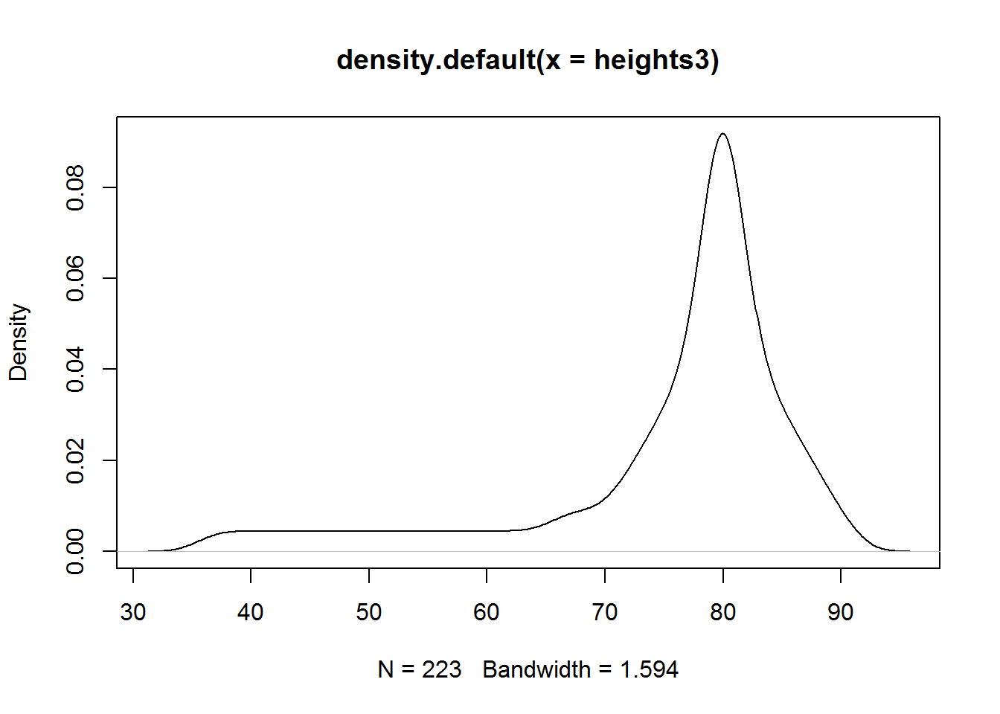

Chapter 2 Introduction to Descriptive Statistics
Goal
The main goal of this chapter is to introduce “Descriptive Statistics” as a foundation for data analysis.
What we shall cover
By the end of this chapter you should:
- have an understanding on concept of location/relative standing (quantiles and percentiles), center (mean, median and mode), variability/spread (range, variance and standard deviation), skewness and kurtosis
- know how to graphically display descriptive summaries as an addition or alternative to displaying numerical summaries
2.1 Descriptive Statistics Overview
One of the first tasks a data analyst is tasked to do after a quick Exploratory Data Analysis is to describe variables in a given data. The main aim of this task is to understand information being passed by these variables, this is achieved by computing summaries of each variable and making visual displays. In this regard, when we say descriptive statistics, we mean numbers and graphs used to describe and summarize a given data.
There could be many descriptive statistics computed and/or graphed to describe an individual variable, but we often report the most informative descriptive statistic per variable.
So what are some of these descriptive statistics?
Consider a numerical variable like scores of students in a class room, for this particular variable, what information would be of interest to us? Won’t it be informative to know average scores, how about range between the highest and lowest score, or the percentage of students in the lower or upper bounds (we call these outliers), won’t they be informative. It could also be quite informative to visualize position of each score. Based on this, we would compute some values to give us this information, these values are what we call descriptive statistics of a variable. In our report, we would not include all of these summaries, only those we found to be informative. For example, if we did not have outliers, then we would not report it, we can simply report on the average. We would also not include graphs on individual observation if it did not show an interesting pattern (clustering or presence of outliers).
In this chapter, we will go over concepts in descriptive statistics (theoretically) and then follow up with a practical session. Our practical session will involve an actual data analysis of some data set followed up by a demonstration of how to write an analytical report.
With that in mind, for our concept building section, we shall discuss two quantiles (percentiles and quartiles ), three measures of central tendency or location (mean, median, and mode), four measures of spread or dispersion (range, inter-quartile range(IQR), variance, and standard deviation) and finally two measure of the shape of the data distribution (skewness, kurtosis).
2.2 Measures of Descriptive Statistics
In this section we will begin by gaining theoretical knowledge on some of the most informative measures of descriptive statistics, these are:
- Quantiles: percentiles and quartiles
- Measures of central tendency: mean, median and mode
- Measures of spread/dispersion: range, inter-quartile, variance, and standard deviation
- Measures of distribution shape: skewness and kurtosis
In all these measures, we will discuss their numerical and graphical representation and follow-up with a demonstration on how they are computed in R.
2.2.1 Quantiles
In the most simplistic terms, quantiles are statistical measures which give values below and above a certain point. There are two commonly used measurements, these are percentiles and quartiles (this term is different from our title quantiles).
Quantiles are used to inform on data distribution, for example, we could say 90% of all callers to a customer care center were satisfied with services offered or most students scored between the second quartile (median/50%) and third quartile (75%). Saying this rather actual values or scores can be quite meaningful as we would get a general picture of where an individual value/score lies within a group of observations.
In general, we use quantiles when we want to describe an individual value in regards to other values.
2.2.1.1 Percentiles
There are quite a number of definitions of percentiles, but the underlining concept behind them is that percentiles give a value below which a given percent of observations occur and the remaining percent of data occur above. To understand this, think of a number line with percentages from 1 to 99 (first value would be 1% and last value would be 99%), a score in the 25th percentile means there are 25% of the observations below it and 75% above it.
Twentyfifth percentile
With that understanding, suppose we were choosing a statistical program to use for our organization and we are told our preferred program R had a score of 286 out of a possible 300. This is good information but leaves us with a number of questions, top most being, how does 286 compare to scores for other programs. Percentiles can be handy here, but we need the entire data set to get a percentile. Therefore let’s use the following hypothetical data (distribution) to learn how to compute percentiles.
174 287 236 211 156 286 232 188 182 276 229First thing we want to do is order our data set from lowest to highest value.
156 174 182 188 211 229 232 236 276 286 287Then we want to compute proportions of each value, that is, get values between 0 and 1 of the same length with our data set. This should give us 0, 0.1, 0.2, 0.3, 0.4, 0.5, 0.6, 0.7, 0.8, 0.9 and 1.
Our percentiles will be these proportions multiplied by 100. We can table this percentile as follows:
| Score | Rank | Percentile |
|---|---|---|
| 156 | 1 | 0 |
| 174 | 2 | 10 |
| 182 | 3 | 20 |
| 188 | 4 | 30 |
| 211 | 5 | 40 |
| 229 | 6 | 50 |
| 232 | 7 | 60 |
| 236 | 8 | 70 |
| 276 | 9 | 80 |
| 286 | 10 | 90 |
| 287 | 11 | 100 |
From this table we can easily see score of 286 at the 90th percentile. This is certainly much more informative than just saying R scored 286 out of 300.
Take note, percentile and percentage are two totally different terms. Saying someone scored 90 percent is not the same as being in the 90th percentile. As an example, there could be a number of scores like 85 to 92 in the 90th percentile but only a score of 90 percent can be 90 percent.
Computing percentiles in R
As mentioned before, we really do not need to memorize formulas or do manual computations, we just need to understand how to use them and then let statistical programs like R do the computation.
In R, to get percentile of any value in a given distribution, we first have to tell R which data we will be using, sort the data and identify index of interested value, get quantiles with function quantile and then subset output of quantiles with index of interested value. For the quantile function, we will input proportions of each value or probability of observing each value.
# Data
scores <- c(174, 286, 287, 236, 211, 156, 232, 188, 182, 276, 229)
# Index of interested score
rank <- which(sort(scores) == 286)
# Percentiles of all scores
p <- quantile(scores, probs = seq(0, 1, length.out = length(scores)))
p
## 0% 10% 20% 30% 40% 50% 60% 70% 80% 90% 100%
## 156 174 182 188 211 229 232 236 276 286 287
# Percentile for interested score
cat("\n", names(p[rank]), "\n")
##
## 90%Please read up on function ?quantile in R to understand available algorithms for computing percentiles, there are nine of them.
2.2.1.2 Quartiles
Quartiles (with an “r” not an “n”) are similar to percentiles except that in quartiles we use fractions of the data instead of percentages. That is, both percentiles and quartiles divide data, however, percentiles divide data such that a certain percent of data lie below a give percent and the rest above while quartiles divide data such that a certain fraction of data lie above and the rest below. To understand these two terms better, let’s first get fractions of a data set and then see how they differ from percentiles.
To obtain sample fractions of a given data set we begin by ordering the data set or getting ordered statistics. These ordered statistics are the quantiles and their fractions can obtained by computing their proportion (each value divided by variable length minus 1).
\[fractions = \sum[\frac{x_i}{(n-1)}]\]
Where:
\(x_i\) = value \(n\) = number of observations
For our students scores data, we can compute their fractions as shown in the table:
## Quantile Sample_fraction
## 1 156 0.0
## 2 174 0.1
## 3 182 0.2
## 4 188 0.3
## 5 211 0.4
## 6 229 0.5
## 7 232 0.6
## 8 236 0.7
## 9 276 0.8
## 10 286 0.9
## 11 287 1.0Notice our fractions are different from our percentiles:
## Quantile Quartile Percentile
## 1 156 0.0 0
## 2 174 0.1 10
## 3 182 0.2 20
## 4 188 0.3 30
## 5 211 0.4 40
## 6 229 0.5 50
## 7 232 0.6 60
## 8 236 0.7 70
## 9 276 0.8 80
## 10 286 0.9 90
## 11 287 1.0 100There are four quarters often reported for a variable, this quarters as the name suggest partition data into four equal parts. There quarters can be quite informative as it can show unique features of the data like data concentration and isolated values at extreme points (outliers). It might not be appropriate to compute quartiles if data is multi-modal (it has more than one data concentration), but let’s discuss this limitation when we are discussing mode under measures of central tendency.
There are three cut-off points that divide a data set into four equal parts, these are Q1 (first quartile), Q2 (second quartile), and Q3 (third quartile). Q1 splits the lowest 25% of data from the highest 75% of data, this is the same as the 25th percentile. Q2 splits data into halves, this is the same as the 50th percentile or as we shall discuss later, the median of a distribution. Q3 splits top 25% of data from lower 75% of data, this is the same as the 75th percentile.

Quantiles: Percentiles and Quartiles
Going back to our scores data set, looking at the fractions for our quantiles (ordered statistics), we cannot find a value where 25% of data are below and 75% are above, we also can’t find a value where 25% of data are above and 75% are below. However we can find a value where 50% are above and 50% are below, this is score 229. We therefore can get Q2 but not Q1 and Q3.
To get these missing values we need to use a mathematical concept called linear interpolation. Linear interpolation simply means getting new data point given some values.
In our case, the first new point we want is a score that cuts off data such that 25% are above and 75% are below. Looking at our table with quantiles and their fractions, we see 0.25 (25/100) is between 0.2 and 0.3, so we know the score we seek is between 182 and 188. We now need to interpolate this score using these four pieces of information.
To interpolate this score, we need to determine type of change as well as rate of this change 2. Change between these two points is an increase as scores increased from 182 to 188 (difference of 6) and fractions increased from 0.2 to 0.3 (difference of 0.1). We can compute rate of increase by dividing change in scores by change in fractions, that is 60. Since the score we seek is between 182 and 188, then we expect rate of increase from score of 182 with fraction of 0.2 to this unknown score with a fraction of 0.25 to be a fraction of 60. This fraction is exactly the difference between 0.25 and 0.2 which is 0.05. So, rate of change from point 0.2,182 to our unknown point is 3, if we add this to 182 we get 185. We can therefore conclude that the score that cuts off values such that 25% are below and 75% are above is 185.
Using the same line of reasoning, we can establish that 256 (236 + (0.75 - 0.7) * ((276 - 236)/(0.8 - 0.7))) cuts off values such that 25% are above it and 75% are below it.
Let’s look at how to compute these values in R.
Getting quartiles in R
In R, we can still use function quantiles to get our quartiles, in these case inputting proportions for the three quantiles:
quantile(scores, seq(0.25, 0.75, 0.25))
## 25% 50% 75%
## 185 229 256We can also get this and other information using function “summary” and “fivenum”. Note function “fivenum” means Tukey’s five number summary, it’s output is unnamed vector, it can be useful for additional computation.
summary(scores)
## Min. 1st Qu. Median Mean 3rd Qu. Max.
## 156.0 185.0 229.0 223.4 256.0 287.0
fivenum(scores)
## [1] 156 185 229 256 2872.2.1.3 Graphical Display for Quantiles
There are about four graphs used to display quantiles, these are:
- Box plot
- QQplots
- Empirical Shift function plots and
- Symmetry plots
On this section we will look at the first two displays.
Box plots
Box plots or more appropriately box-and-whisker plots are one of the most informative graphical displays for distribution even though they have of late been superseded by fancier displays; their simplicity make them stand test of time.
Box-and-whisker plots are best used to show outliers (values occurring at extreme points) and comparing two or more distributions.
To draw a box-and-whiskers plot, draw a box from Q1 to Q3 noting Q2 with a vertical line. This box is called Inter-quartile Range (IQR) and it represents 50% of data (75% - 25%). Draw whiskers as lines extending 1.5 times IQR below Q1 and above Q3.
Box-and-whiskers plot
Value 1.5 is an arbitrary number with no specific meaning behind it, however, it but serves it’s purpose in identifying outliers.
Constructing box-and-whisker graphs by hand
As an example, suppose we had the following hypothetical values for students scores;
## 80 77 83 64 80 81 75 83 71 86 81 76 68 84 70 24 17 9 20 99 97To draw a box-and-whiskers plot for this distribution, we first get it’s quartiles:
## 25% 50% 75%
## 68 77 83Then we compute IQR and whiskers length. We compute whiskers as 1.5 times IQR below Q1 and above Q3. Whiskers are lines extending from both ends of Q1 and Q3, they are referred to as lower and upper whiskers. IQR is computed as the difference between Q3 and Q1.
For our hypothetical data set, IQR = 15. Our whiskers are computed as:
Lower whisker
1.5 time IQR is 22.5. Subtracting 22.5 from Q1 which was 68 we get 45.5. Our lower whisker will extend from Q1 to 45.5, all values below this are outliers, these are 9, 17, 20 and 24.
Upper whisker
For the upper whisker, we will add Q3 (83) to 22.5 giving us 105.5. Since we do not have scores above 99, then we will draw our whisker from Q3 to our highest score which is 99.
Within this information, we can now draw our box plot.
Box plot for scores
Using R to plot box-and-whiskers
In R, plotting box-and-whisker is just one function call, “boxplot”.
boxplot(scores2, col = "grey90", ylab = "Scores", pch = 21, bg = 4, horizontal = TRUE)
title("Box plot for student's scores")Figure 2.1: Box plot in R
Interpreting box-and-whisker plot
From our plot, it’s clear to see most students performed well as they clustered around average score of 77, however, there are four students who performed worse than other students.
Quantile plots
These plots display sample fractions against quartiles they correspond to. To draw these we just need to compute the fractions and plot them.
Using our scores data set, we can get the following fractions:
## [1] 0.00 0.05 0.10 0.15 0.20 0.25 0.30 0.35 0.40 0.45 0.50 0.55 0.60 0.65
## [15] 0.70 0.75 0.80 0.85 0.90 0.95 1.00We will plot fractions we have just computed on the x-axis and our ordered scores/quartiles on the y-axis. We will plot a line passing though all points.
Due to interpolation, drawing this plot by hand might not be a good idea, therefore we will use R.
Quantile plots in R
There is no function to call for this plot, but since it is a line graph, standard “plot()” should do the trick.
plot(quants, sort(scores2), type = "l", ann = FALSE)
title("Quantile plot in R", xlab = "Sample fractions", ylab = "Quartiles")
# Add points to show how linear interpolants
points(quants, sort(scores2), pch = 21, bg = 4)Figure 2.2: Q-plot in R
2.2.1.3.1 Quantile-Quantile (QQ) Plots
QQ plots are graphical displays for comparing two data sets, these data sets can either be two observations or one observation and one theoretical data set. Quantiles of observation one are plotted against quantiles of observation two/theoretical data set. Patterns of these points are used to
- Assess whether distributions being compared are similar
- Compare shapes of distribution
- Assess goodness of fit
As an example, let’s add a second class scores with these values.
## 93 81 75 78 53 70 78 92 76 98 67 76 82 74 61 72 71 93 73 68 93 83 85 96 81 79 76 72 87 75 71 75 96 85 88We want to compare this distribution with that of our first class. To do this we compute sample fractions of both observations. But before we do that, take note these two classes do not have the same size, class one has 21 scores and class two has 35. Since we want to plot them on the same axis, we need to standardize their axis by taking number of fractions for each sample to be equal to highest value between the two observations.
Therefore, our first task is to get highest number between the two observations which is 35 (length of second class), then we compute there fractions. This should give us 0, 0.03, 0.06, 0.09, 0.12, 0.15, 0.18, 0.21, 0.24, 0.26, 0.29, 0.32, 0.35, 0.38, 0.41, 0.44, 0.47, 0.5, 0.53, 0.56, 0.59, 0.62, 0.65, 0.68, 0.71, 0.74, 0.76, 0.79, 0.82, 0.85, 0.88, 0.91, 0.94, 0.97 and 1.
Now we can get quantiles for our classes using our computed fractions. Since we are using sample size for the second class (35), then quantiles for second class would simply be ordered statistics of it’s class scores. However, for the first class we need to interpolate their quantiles. We have seen how to interpolate these values, hence we will use R to make our work easier.
Using R
Let’s compute quantiles for scores of first and second class.
# Get number of fractions
n <- max(length(scores2), length(scores3))
# Compute quantiles
quantileClass1 <- quantile(scores2, seq(0, 1, length.out = n))
cat("Quantiles for first class:\n", quantileClass1, "\n\n")
## Quantiles for first class:
## 9 13.70588 17.52941 19.29412 21.41176 23.76471 45.17647 64.47059 66.82353 68.58824 69.76471 70.47059 71.23529 73.58824 75.23529 75.82353 76.41176 77 78.76471 80 80 80.35294 80.94118 81 81.23529 82.41176 83 83 83.47059 84.11765 85.29412 88.58824 95.05882 97.82353 99
quantileClass2 <- quantile(scores3, seq(0, 1, length.out = n))
cat("Quantiles for second class:\n", quantileClass2)
## Quantiles for second class:
## 53 61 67 68 70 71 71 72 72 73 74 75 75 75 76 76 76 78 78 79 81 81 82 83 85 85 87 88 92 93 93 93 96 96 98We can now plot these two samples using plot function. But you should know that R has a handy function which we can call with our two distributions and it will do all the calculations and then make QQ plots for us. This function is “qqplot”.
Let’s compare qqplots generated using our computations and those from qqplot function.
op <- par("mfrow")
par(mfrow = c(1, 2))
plot(quantileClass1, quantileClass2, ann = FALSE, pch = 21, bg = 4)
title("Computed QQ plot", xlab = "Class 1", ylab = "Class 2")
qqplot(scores2, scores3, ann = FALSE, pch = 21, bg = 4)
title("Using 'qqplot()'", xlab = "Class 1", ylab = "Class 2")par(op)
## NULLThese plots look the same, now we need to interpret it.
Interpreting QQ plots
There are at least three distribution properties a QQ plot can tell us. This are, skewness, tailness and modality. It should however be noted that distributions with small sample size are not often clear as in our case (sample size of 21 and 35).
In general, if points on a QQ plot lie on the line x=y, then the two distributions are said to be similar. If the points form a line but not necessarily lie on x=y, then they are said to be linearly related and generally come from the same probability distribution. We will discuss probability distributions and their implications in chapter three. Given this information, let’s add x=y line to our plot.
qqplot(x = scores2, y = scores3, xlab = "Class 1", ylab = "Class 2", main = "QQ plot in R", pch = 21, bg = 4)
lines(x = 1:99, y = 1:99)To draw x=y line we used function line parsing to it values forming x=y. From this line we know that scores of class one and class two do not form a linear relationship. We can thus conclude they do not have similar distributions.
Though not to clear (due to small sample size), there seems to be a bi-modal (two peaks) given the fact that we see a sort of “s” shape. These two peaks are concentration of points at point 20,70 and 80,80.
Something we can see from our graph are tailness or isolated values at extreme point, this could be an indicator of outliers (values away from expected).
It is useful to note QQ plots are not reported, they are more applicable as an Exploratory Data Analysis technique (an analysts tool so to say), that is, they are more suitable in guiding data analysis rather than being a finding to be reported.
We shall revisit QQ plots when discuss probability distribution, at that point we would have discussed some of the issues we have mentioned like skewness and modality.
2.2.2 Measures of Central Tendency
To best understand measures of central tendency or location, think of our first example on scores, we wanted to make an informed select of one statistical program among a number of programs. To this end we were told our preferred program, R, scored 286 out of 300. From our discussion on quantiles we discovered that this meant it was in the 90th percentile. That’s certainly good information, however, if you are an astute analyst, then you would want to know where the other programs are located in the distribution. More specifically, you would want to know distance of 286 from center of the distribution. Measure of central tendency is the answer to this. They summarize data to a single useful and representative information.
There are three commonly used measures of central tendency, these are “mean”, “median” and “mode”. In this section we get to look at each one of them while noting their applicability.
2.2.2.1 Mean
Mean and specifically arithmetic mean indicates center of a distribution. It’s computed as sum of all values divided by number of values. So, if you have a variable, mean is the summation of all values in that variable divided by number of elements in that variable. Mean is more appropriate for numerical variables (discrete 3 and continuous variables 4), but not qualitative or categorical data.
2.2.2.1.1 Mean for numeric data
Going back to our first example on scores on statistical programs, we compute mean as total of all values divided number of all values, that is, sum of divided by 11, giving us 223.3636364.
Mathematical notation
Based on the notion that mean is the sum of all values divided by number of values, then, given values x1, x2, x3, …, Xn, mean is:
\[\frac{x_1 + x_2 + x_3 + ... + x_n}{n}\]
This is mathematically expressed as:
\[\bar{x} = \frac{\sum {x_1, x_2, x_3, ..., x_n}}{n}\]
Where:
\(\bar{x}\) is Sample mean \(\sum\) is Greek capital letter sigma meaning “sum of” \(n\) is sample size
This mathematical expression is often reduced to:
\[\bar{x} = \frac{\sum{x}}{n}\]
In statistics, it’s important to distinguish between population parameters 5 and sample statistics 6. Mathematical expression given above is a sample statistic, if we were dealing with entire population, then population mean would be given by:
\[\mu = \frac{\sum{X}}{N}\]
Where:
\(\mu\) is population mean \(X\) are observations \(N\) is population size
Computing Mean in R
Getting mean in R is just one function call, we use function “mean”.
mean(scores2)
## [1] 67.85714Do take note, if data contains missing values or NA’s, you need to tell R by setting argument “na.rm” to TRUE, otherwise output would be NA.
Univariate Frequency Distributions
When we have a discrete variable with few unique values or continuous variable with known ranges, then it useful to convert them grouped data.
Grouping data involves categorization or batching together observations. Grouping not only helps describe similar observations but it also helps to see underlying distribution like average, spread, skewness, modality or peakness, and extreme or isolated values.
Grouped data is often presented in frequency tables. This table can be used for grouped and ungrouped data. Ungrouped data are often unique vales of a discrete variable. Frequency tables are also called frequency distributions as they tabulate frequencies along side their corresponding observation. Frequency is the number of times an observation occurs.
With that understanding, let’s look at two examples of frequency distributions, one will be for ungrouped data and the other for grouped data.
For our first example on ungrouped data, let’s consider the following data set, it’s a list of responses to a question asked to analyst on how many times they have used R in the last week.
{0, 0, 1, 2, 3, 3, 3, 3, 3, 3, 4, 4, 4, 4, 4, 4, 4, 4, 4, 4, 4, 5, 5, 5, 5, 5, 5, 5, 5, 5}
From this data, we can see there are a number of repetitive values or few distinct values. Based on this fact, we can summarize these data by counting number of occurrence of each unique value (0, 1, 2, 3, 4 and 5) and tabulate them as follows.
| Usage | Frequency |
|---|---|
| 0 | 2 |
| 1 | 1 |
| 2 | 1 |
| 3 | 6 |
| 4 | 11 |
| 5 | 9 |
What we have just created is an ungrouped frequency table.
Now let’s look at grouped frequency distributions.
Suppose we have the following data on number of years some of the most popular programs have been in existence:
{1, 4, 6, 7, 7, 8, 9, 12, 12, 12, 13, 15, 15, 16, 17, 17, 18, 19, 19, 19, 20, 20, 21, 21, 22, 22, 23, 23, 24, 25}
There are few terms or concepts we need to appreciate as we construct frequency tables for grouped distributions. These are:
- Class: Range of values like “1-5” or “6-7”. These can also be considered as sub-set of a data distribution.
- Class size: It is the number of values in a class, for example a class of “1-5” has 5 values 1, 2, 3, 4, and 5.
- Class limits: These are the minimum and maximum values of a class, for example 1 and 5 for class “1-5”. These values can be specified as upper and lower limits.
- Class boundaries: These are also called true class limits and computed as an average of sum of lower limit of one class and upper limit of a subsequent class. As an example, if we have three classes “1-5”, “6-10” and “11-15”, we can compute class boundaries for the first two classes as (5 + 6)/2 = 5.5 and (10 + 11)/2 = 10.5. Notice, we are adding half a point to each upper boundary, therefore, we can just do the same to other classes beginning from before first class and ending right after last class; that is 0.5, 5.5, 10.5, and 15.5.
- Class width/interval: These are difference between upper and lower boundaries of any class for example 5 which is 5.5 - 0.5. It’s also the lower limits of two consecutive classes or the upper limits of two classes like 5 which results from 6 - 1.
- Class mark/midpoint: This is the middle value in a class. It’s computed as an average of upper and lower limits of a class or difference of upper and lower boundaries.
When constructing a frequency distribution table there are a few issues that need to be agreed on, these include number of classes and class width. It’s important to ensure we do not have too many or too few classes as it will obscure certain feature of our distribution or make it hard for us to interpret frequency distribution. It’s also important for us to consider class width as we do not want to end up with too many empty classes than necessary.
There are couple of formulas out there on estimating class size/width, there are also those that recommend class sizes of either 2, 5, or 10. I suggest using the latter recommendation but guided by data. For example, for our data which has values from 1 to 25, we might want to have a class width of 5 thereby having a total of 5 classes. Taking classes of width 2 might make our frequency distribution too big as we would have about 12 classes and some leftover. Having class width of 10 on the other hand would mean having only two or three classes, this might be a bit small. So our 5 classes seams ideal.
Now that we know how many classes we will have and their width, we can construct our classes bearing in mind that they need to be unique (a value can only have one possible class it belongs to). Based on this we can have the following classes and number of observations that fall in those classes.
| Years | Frequency |
|---|---|
| 1 - 5 | 2 |
| 6 - 10 | 5 |
| 11- 15 | 6 |
| 16- 20 | 9 |
| 21- 25 | 8 |
What we have above is a grouped frequency distribution table.
With this brief introduction to frequency distributions, let’s now see how to compute their descriptive statistics.
2.2.2.1.2 Mean for frequency distributions
In this section we will look at how to compute averages for ungrouped and grouped distributions.
2.2.2.1.3 Mean for ungrouped distributions
To learn how to compute mean for ungrouped distributions, let’s build up from our understanding of mean for non-frequency distribution. For these non-frequency distributions, we defined mean as sum of all values divided by number of values. Now, for ungrouped mean, we need to begin by reconstructing number of values by multiplying observations by their frequencies, and then sum them up before dividing by number of values or total frequencies.
As an example, let’s revisit our data on responses from analyst.
| Usage | Frequency |
|---|---|
| 0 | 2 |
| 1 | 1 |
| 2 | 1 |
| 3 | 6 |
| 4 | 11 |
| 5 | 9 |
We compute mean for this data by multiply each usage (observation/value) with it’s frequency, then sum them up and finally divide by number of responses (number of analysts); that is,
\[\frac{(0*2) + (1*1) + (2*1) + (3*6) + (4*11) + (5*9)}{2+1+1+6+11+9}\]
We should get mean as 3.6666667. Based on this finding we can conclude that, on average analysts in our organization used R about 3.7 times last week.
We can mathematically express this computation as:
\[\bar{x} = \frac{{\sum\limits^{n}_{i=1}}{f_ix_i}}{\sum\limits^{n}_{i=1}{f_i}}\]
Where:
n = number of unique observations or number of rows in frequency table f = frequency x = an observation in a frequency table
or simply as:
\[\bar{x} = \frac{\sum{fx}}{\sum{f}}\]
Computing mean for ungrouped distribution in R
In R, we can compute mean for distribution with “mean” function. To generate a frequency table we use function “table”. table() does not produce a very presentable table, so we will transform it into a data frame with “as.data.frame” function thereby giving us a table similar to what we manually constructed.
## [1] 3.666667
## ungpd1
## 0 1 2 3 4 5
## 2 1 1 6 11 9
## Usage Freq
## 1 0 2
## 2 1 1
## 3 2 1
## 4 3 6
## 5 4 11
## 6 5 92.2.2.1.3.1 Mean for grouped distributions
Let’s use our second example on frequency distribution to compute mean for a grouped distribution. This was our distribution:
| Years | Frequency |
|---|---|
| 1 - 5 | 2 |
| 6 - 10 | 5 |
| 11- 15 | 6 |
| 16- 20 | 9 |
| 21- 25 | 8 |
We have just discussed mean for ungrouped mean as summation of products of observations and frequencies divided by total frequency. We are going to use this definition with a slight amendment and that’s what we consider to be our observations.
When we were dealing with ungrouped data it was easy for us to recreate our original values by multiplying observations by their frequencies, however, for grouped distributions we can’t do this. This is because we can simply not know exact value of any frequency within a class (range of values). So what we can do is go for the next best thing which is an estimate. This estimate is a class midpoint or a class mark. Once we have these mid points, then we can compute mean just as we did with ungrouped data.
To show each computation, let’s use our frequency table and add column on midpoint and product of midpoints and frequencies.
| Years | Midpoints | Frequencies | Product |
|---|---|---|---|
| 1 - 5 | 3 | 2 | 6 |
| 6 - 10 | 8 | 5 | 40 |
| 11 - 15 | 13 | 6 | 78 |
| 16 - 20 | 18 | 9 | 162 |
| 21 - 25 | 23 | 8 | 184 |
| Total | 30 | 470 |
Mean for this distribution is thus 470 divided by 30 which is 15.6666667. We can therefore conclude that average number of years statistical packages have been in existence is about 15.7 years. We can use this average with number of years R has been in existence which is 24 (from 1993 to 2017); looks like R has some mileage over most programs (hypothetically speaking).
There two things we need to appreciate as we conclude this section on mean for grouped data, these are;
- Mean for grouped data is an estimate: Unlike mean for ungrouped distributions, mean for grouped data is an approximation as it uses midpoints rather than actual values/observations. It is therefore important to collect responses with ungrouped values as it is easier to group observations during data analysis than it is to reconstruct actual values from classes.
- Don’t use mean for frequency distributions with open groups: Open groups like “15+” or “65 and above”, should use mode as a measure of central tendency. This is because it is not possible to compute midpoint for an infinite class.
Computing grouped mean in R
Unfortunately there is no one function for calculating grouped mean in R so we have to go through a number of steps to compute this mean.
# Data
years <- factor(c("0-5", "6-10", "11-15", "16-20", "21-25"), ordered = TRUE)
freq <- c(2L, 5L, 6L, 9L, 8L)
gpd1 <- data.frame(Years = years, Freq = freq)
gpd1
## Years Freq
## 1 0-5 2
## 2 6-10 5
## 3 11-15 6
## 4 16-20 9
## 5 21-25 8
# Number of observations
n <- sum(gpd1$Freq)
# Midpoint
midpoint <- c((5+0)/2, (10+6)/2, (15+11)/2, (20+16)/2, (25+21)/2)
gpd1[3] <- midpoint
names(gpd1)[3] <- "Midpoint"
gpd1
## Years Freq Midpoint
## 1 0-5 2 2.5
## 2 6-10 5 8.0
## 3 11-15 6 13.0
## 4 16-20 9 18.0
## 5 21-25 8 23.0
# Product of midpoints and frequency
gpd1[4] <- gpd1$Freq * gpd1$Midpoint
names(gpd1)[4] <- "Product"
gpd1
## Years Freq Midpoint Product
## 1 0-5 2 2.5 5
## 2 6-10 5 8.0 40
## 3 11-15 6 13.0 78
## 4 16-20 9 18.0 162
## 5 21-25 8 23.0 184
# Mean
sum(gpd1$Product)/n
## [1] 15.633332.2.2.2 Median
Median is basically the middle observation in an ordered distribution. To get this middle value, we have to determine if distribution has an even or an odd number of observations.
2.2.2.2.1 Median for odd numbered distributions
For odd numbered observations, middle value is rather easy to locate, it is that value which splits a distribution such that there are equal number of values before it and after it. For example, a distribution with 21 observation would have the eleventh observation as it’s median since there ten values before it and another ten after it. Basically , median for an odd numbered distribution is number of observations divided by two and then raised to the nearest whole like 21/2 = 10.5, 10.5 to nearest whole is 11.
Using this reasoning we can generate our own formula for computing median for odd numbered distribution:
\[Median_{(odd)} = data[round(\frac{n}{2})]\]
Where:
data = distribution [] = subset notation round = raise number to next whole number (digits = 0) n = number of observation in distribution
Now let’s get median for our data on scores for statistical programming languages.
First we order our data from the lowest value to the highest value:
## 156 174 182 188 211 229 232 236 276 286 287Since number of elements in this data set is odd (11), we can use our formula that is, median is round(11/2) which is,229.
Computing median in R
In R, median for numerical distribution is one function call whether it’s an odd numbered distribution or even.
median(scores)
## [1] 2292.2.2.2.2 Median for even numbered distributions
For even numbered distributions, median is an average of the two middle values. For example, a distribution with 20 observations would have it’s median as an average of the tenth and eleventh observation.
To get these two middle values, we get half the number of distribution like 20/2 and half the number of distribution plus one like (20/2 + 1).
As before, we can generate our own formula for computing median for even numbered distribution as:
\[Median_{(even)} = \frac{{data[\frac{n}{2}]+data[\frac{n}{2}+1]}}{2}\]
Where:
data = distribution [] = subset n = number of observation in the distribution
Now, using our scores data set, let’s add a score of 234 to make an even numbered distribution. This is how it looks when ordered:
## 156 174 182 188 211 229 232 234 236 276 286 287Our data now has twelve values, using our derived formula, we can compute median as
\[Median_{(even)} = \frac{scores[\frac{12}{2}]+scores[\frac{12}{2}+1]}{2}\]
This should output 230.5.
Another way to look at median for even numbered distribution is number of distribution (n) plus one divided by two.
\[Median_{(even)} = \frac{n + 1}{2}\]
Above formula is certainly simpler but not as intuitive as our formula.
2.2.2.2.3 Median for frequency distributions
Like median for non-frequency distribution, computation for median for frequency distributions depends on whether total frequency is odd or even.
Since we now know difference between median for odd and even numbered distribution, in this section we will focus on getting to locate median of frequency distribution by using our two data sets on responses from analysts and years statistical programs have been in existence.
By and large, median for ungrouped and grouped distributions go through the same processes. We first determine if we are dealing with an odd or an even numbered distribution by getting sum of all frequencies, then using appropriate formula, compute location of median, and finally identify observation or class containing the median by cummulating frequencies.
Let’s see how this actually works.
2.2.2.2.3.1 Ungrouped distributions
Using our data analyst response data, let’s determine its median.
We begin by finding out if it’s an odd or even numbered distribution by summing frequencies (2, 1, 1, 6, 11, and 9). This should give us 30, an even number.
Since it’s an even number we will use our second formula to locate position of our median. Median is the observation at position 15.5 ((30+1)/2).
To identify observation at this position we need to generate cumulative frequencies and the best way to do this is to add a column to our frequency distribution table.
| Usage | Frequency | Cumulative frequency |
|---|---|---|
| 0 | 2 | 2 |
| 1 | 1 | 3 |
| 2 | 1 | 4 |
| 3 | 6 | 10 |
| 4 | 11 | 21 |
| 5 | 9 | 30 |
From our cumulative frequencies, we can see 15.5 is in the fourth observation, hence median is 4.
Locating median for ungrouped distributions in R
Median for ungrouped distributions is computed the same way as non-frequency distributions, using function “median”.
ungpd1
## [1] 0 0 1 2 3 3 3 3 3 3 4 4 4 4 4 4 4 4 4 4 4 5 5 5 5 5 5 5 5 5
median(ungpd1)
## [1] 42.2.2.2.3.2 Grouped distributions
Median for grouped distribution is exactly the same as that of ungrouped distributions. That is, we begin by identifying whether we have an odd or an even number of distribution, compute location of our median and finally identify class with that position.
Our total frequency is 30, same as before so we know we are looking for a class with the fifteen point five observation.
We generate cumulative frequencies.
| Years | Frequencies | Cumulative frequency |
|---|---|---|
| 1 - 5 | 2 | 2 |
| 6 - 10 | 5 | 7 |
| 11 - 15 | 6 | 13 |
| 16 - 20 | 9 | 22 |
| 21 - 25 | 8 | 30 |
From these (cumulative frequencies) we find 15.5 is in the fourth class, hence median class is “16-20”.
Locating median for grouped distribution in R
Base R does not have a function to compute median for grouped data, but it is not hard to compute it. For odd number of distribution, we can get median of our distribution’s indices, round it up and subset this value from our data. For even number, we can simply get median of our data.
# Median for odd numbered grouped distribution
dat <- rep(as.character(years), freq) # Generate data
dat[round(median(seq_along(dat)))]
## [1] "16-20"
# Median for even numbered grouped distribution
dat[length(dat)+1] <- "0-5" # Add a value to make distribution even
median(dat)
## [1] "16-20"2.2.2.3 Mode
Mode is the most frequently occurring value or category. This is the only measure of central tendency suitable for categorical or qualitative data. This is also the only measure of central tendency which could have more than one value or none at all.
A distribution can have no mode in which case there are repeating/uniform observations, or have one mode thus called “unimodal”, or two modes thus called “bimodal” or more than two modes thus called “multimodal”.
2.2.2.3.1 Mode: numerical distributions
For discrete distributions, to get the most frequently occurring value we need to generate frequencies and then determine which observation has the highest frequency. For continuous distributions, we need to group/categorize observations, we will discuss these distributions in our section on grouped distributions.
As an example of discrete distributions, let’s look at situations where we do not have a mode, have one mode (unimodal), two modes (bimodal) and where we have more than two modes (multimodal).
Uniform Distribution
Uniform distributions have no mode which means all observations are equal. Here is an example of a data set with no mode.
## 65 65 65 65 65 66 66 66 66 66 67 67 67 67 67 68 68 68 68 68 69 69 69 69 69 70 70 70 70 70We can establish lack of mode using a frequency table.
| Value | Frequency |
|---|---|
| 65 | 5 |
| 66 | 5 |
| 67 | 5 |
| 68 | 5 |
| 69 | 5 |
| 70 | 5 |
All observations have the same frequency.
Unimodal distributions
Unimodal distributions have one peek or one most frequently occurring observation. For example, the following distribution:
## 64 65 67 66 64 66 65 65 64 68 66 65 67 64 65 66 64 65 65 64 65 66 65 65 64 64 67 65 64 65 64 66 66 65 66 64 64 63 66 66 67 63 65 66 65 65 66 66 65 65 66 66 66 65 64 64 68 66 64 65 65 66 65 67 65 65 65 66 66 65 66 64 65 65 64 66 63 66 65 64 66 66 64 66 65 65 66 66 64 63 66 67 64 64 64 68 65 64 66 65We can create the following frequency distribution
| Values | Frequency |
|---|---|
| 63 | 4 |
| 64 | 24 |
| 65 | 33 |
| 66 | 30 |
| 67 | 6 |
| 68 | 3 |
From this table, it is clear to see the most frequently occurring value is 65 as it has the highest number of observations (frequency of 33).
Bimodal distributions
Bimodal distributions have exactly two modes. That is, they have two most frequently occurring value. We can see this from the following distribution
## 39 39 40 40 40 40 40 40 41 41 41 68 69 69 69 70 70 70 70 70 70 71 71This distribution has the following frequency distribution:
| Value | Frequency |
|---|---|
| 39 | 2 |
| 40 | 6 |
| 41 | 3 |
| 68 | 1 |
| 69 | 3 |
| 70 | 6 |
| 71 | 2 |
The two modes in this distribution are 40 and 70 as each has six observations.
Multimodal distributions
Multimodal distributions have more than two modes, here is an example of a distribution with three modes.
multimodal <- c(bimodal, rep(72, 6))
cat(multimodal)
## 39 39 40 40 40 40 40 40 41 41 41 68 69 69 69 70 70 70 70 70 70 71 71 72 72 72 72 72 72From the following frequency distribution, we can see there are three modes, 40, 70 and 72.
| Value | Frequency |
|---|---|
| 39 | 2 |
| 40 | 6 |
| 41 | 3 |
| 68 | 1 |
| 69 | 3 |
| 70 | 6 |
| 71 | 2 |
| 72 | 6 |
Getting mode of a distribution in R
R does not have a function to get statistical mode, the “mode” function in R is used to do something else (get internal storage type). However, getting this value is rather easy with knowledge of what mode is.
To get mode we table (make a frequency table) our values, find maximum frequency using function “which.max” and return value using “name” function.
# Data
set.seed(583)
mode1 <- round(rnorm(100, 65))
# Frequency table
table(mode1)
## mode1
## 63 64 65 66 67 68
## 4 24 33 30 6 3
# Mode
names(which.max(table(mode1)))
## [1] "65"2.2.2.3.2 Mode: Frequecy distribitions
In this section we discuss how to get mode for grouped and ungrouped distribution.
2.2.2.3.2.1 Mode: ungrouped distributions
Getting mode for this distribution is the same as getting mode for non-frequency distribution, actually even easier since we have frequencies, we only need to determine which is the highest frequency.
Using our data analyst responses, we can get mode as 4 since it had the highest frequency (11).
In R we only need to use function “which.max” to get mode.
# Frequency table (as a dataframe)
ungpd1Tab
## Usage Freq
## 1 0 2
## 2 1 1
## 3 2 1
## 4 3 6
## 5 4 11
## 6 5 9
# Mode
ungpd1Tab[which.max(ungpd1Tab$Freq), 1]
## [1] 4
## Levels: 0 1 2 3 4 52.2.2.3.2.2 Mode: Grouped distributions
Mode for grouped data is applicable for both categorical distributions as well as continuous distributions. For continuous distributions, categories/groups need to be constructed first.
From these groups we can get modal class the same way we got mode for ungrouped frequency, that is, identify class with highest frequency.
For our data on number of years statistical programs have been in existence, we can easily locate mode as the fourth class “16-20” which has 9 observations.
Locating mode for grouped distribution in R
Using R, we again use function “which.max” and subset class (years).
gpd1$Years[which.max(gpd1$Freq)]
## [1] 16-20
## Levels: 0-5 < 11-15 < 16-20 < 21-25 < 6-10Here is a function for determining modal class given a continuous distribution and breaks. Breaks are cutoff points to which a distribution will be grouped.
mode_grouped <- function(x, breaks, class = TRUE) {
n <- length(breaks)
nms <- sapply(1:(n-1), function(i) paste(breaks[i], "-", breaks[i+1]))
freq <- lapply(1:(n-1), function(i) which(x >= breaks[i] & x < breaks[i+1]))
names(freq) <- nms
if (class) {
names(which.max(sapply(freq, length)))
} else {
which.max(sapply(freq, length))
}
}2.2.2.4 Comparison of measures of central tendecy
We have just concluded a good discussion on measures of central tendency. From it we can compute mean, median and mode of any numeric and frequency distribution. This is certainly great, but do we need to report on all of them? Certainly not, each measure has it’s own merits and demerits as well as it’s applicability. Let’s discuss these aspects.
Central tendency for qualitative distributions
When dealing with qualitative or grouped data, mode is the most appropriate measure of central tendency. Reason, think of a variable such as educational level with high, medium and low, would it make sense to say average level of education is 10.6, what would ten mean and more specifically, what would a point six indicate? Won’t it be more informative to hear “most respondents have high education”.
Mean and median
When data has some extreme values, median is more appropriate than mean. Basic reason for this is that mean uses all values in a distribution while median uses positions of these values. Think of it this way, you can’t compute mean without knowing values in a distribution but you can say where median value is located by just knowing how many values a distribution has.
For example, in the following distribution, we have eleven values from 53 to 64. This distribution does not have extreme values.
## 59 59 60 60 61 61 61 61 62 62 62Mean for this distribution is 60.7272727 and median is 61, a difference of 0.2727273. Difference between mean and median is small and any can be used to report centrality of distribution but most analysts in this case would report on mean.
Now let’s add just one extreme value (2) and assess it’s impact on mean and median.
## 2 59 59 60 60 61 61 61 61 62 62 62Now our distribution begins from 2 not 53. When we compute mean we get 55.8333333 and when we compute median we get 61, a difference of 5.1666667. For this distribution, which average would be more appropriate, mean of about 56 or median of about 61?

Comparison of mean and median with extreme value
As shown in the figure above, mean would certainly not be an accurate measure of centrality for this distribution, it is influenced by an extreme value (2). Therefore, when reporting averages for distributions with extreme values, it is meaningful to report median as opposed to mean.
2.2.2.5 Summary - Mean, Median, Mode
Mean is also called average, it is computed as sum of all values divided by number of values. Median is center of a distribution; the value at the middle of a distribution when it is arranged in order. Mode is the most frequently occurring value in a distribution.
Mean, median and mode provide us with a descriptive value for our distribution what we would call a representative value. All three measures can be used to describe numerical distributions (discrete and continuous), but mean and median are more appropriate. When a numerical distribution has extreme values, it is best to use median as a representative value.
For any distribution, there can only be one mean and one median, but there could zero, one (uni-modal), two (bimodal) or more modes (multimodal). When writing a data analysis report we only report the most appropriate statistic.
Sometimes it can be quite informative to present data in frequency tables. These are tables summarizing observations with how many time they occur (frequency). Frequency distributions can either be ungrouped or grouped. Grouped means observations have been categorized or bundled together in form of classes. These classes comprise range of values, how these classes are constructed is important and some considerations must be made. It’s important as analysts to always try to collect data as ungrouped distribution as it is easier to construct groups pre-analysis rather than reconstruct values during analysis. Grouped statistics are estimates and with all estimates, they are not as accurate.
2.2.3 Measures of dispersion (variablity/spread)
Having established a representative value for our data, the next thing we may wish to know is how spread out our data points are and more specifically how far away they are from our representative value.
Why you might ask, well, think of our first data set with scores on statistical program’s performance. We found out our preferred program R with a score of 286 is in the 90th percentile, that meant it had performed better than 90% of the programs. We also have a reported average of about 223 which tells us R is way ahead of average score. This is certainly informative, but as analyst we are abound to want more information. For example we might want to know where the other scores are located, are they clustered around our average score or are they dispersed. Another question we might have is, since 286 is way above mean of 223, could it be an extreme value and what was the minimum and maximum score. Now this is where measure of dispersion comes in.
Other than answering these questions, measures of dispersion can be used to compare distributions with similar measures of central tendency. For example, two distributions can have the same mean but one distribution can have it’s values more spread out from the mean than the other distribution.
When we say dispersion, we mean how spread out our values are in the distribution. Some of the statistics used to measure dispersion are range, inter-quartile range and standard deviation.
In this section we discuss how to compute these measures of dispersion.
2.2.3.1 Range
Range is the simplest measure of dispersion, it is described as the difference between minimum and maximum value. This difference is often reported along side these minimum and maximum values. In general, range tells us how spread out our values are.
For example, to compute range for our data on scores for statistical programs, we begin by arranging values from lowest to the highest value. From this ordered distribution we subset first and last value which become our minimum and maximum values. Range is thus their difference. We can therefore establish maximum score as 287 and minimum score as 156 there difference is 131. When reporting this range, we can do it this way 131 (156 - 287).
Computing range in R
In R, we get range using function “range”, it’s output is a vector with minimum and maximum values. To get difference between the two, use function “diff”.
# Minumum and maximum values
range(scores)
## [1] 156 287
# Range
diff(range(scores))
## [1] 131Range of 131 (156 - 287) out of a possible range of 300 (0 - 300) (possibility of zero to maximum score) tells us scores are not quite spread out. In comparison to R’s score of 286, we can now say R is almost the highest rated program.
In general, range is useful when we want to look at an entire distribution. It is especially informative when comparing dispersion of two or more distribution. For example, we could look at range of two or more class scores to see how well each class did.
Range however is influenced by extreme values, extreme values increase range of a distribution. Take for instance a distribution with values 2, 55 and 65, range for this distribution is 63 (2, 65), this dispersion is wider because of value 2, if we excluded it we would get a range of 10 (55, 65). Because of this shortfall, inter-quartile range are often reported.
2.2.3.2 Inter-quartile Range
Inter-quartile range (IQR) is a range of where 50% of a distribution lie. For distributions with outliers, it is best to report it’s IQR than it’s range.
IQR is simply third quartile minus first quartile (Q3 - Q1). Q1 is the 25th percentile or location below which 25% of values lie and Q3 is the 75th percentile or location above which 25% of data lie.
We have discussed how to get quartiles as well as how to show interquartile range when constructing box plots. Here let’s discuss how IQR can inform us on spread of a distribution.
From our scores on statistical programs, we can compute Q3 as 256 and Q1 as 185 therefore IQR is 71. So we can report 50% of our data lie between 185 and 256. We can also show this using a box plot.
boxplot(scores, horizontal = TRUE, col = "grey90")
title("Distribution of scores", xlab = "scores")Figure 2.3: Scores distribution
From this box plot, we can also establish there are no outliers.
Note, IQR is a range and not a scalar (single value), hence it’s best to report both range and difference like “131 (156 - 256)” or simply the range alone “156, 256” but not “131”, it’s simply not communicative.
Like range, IQR is not the best measure of dispersion as it does not take into account other values in a distribution other than quartiles, minimum and maximum values. A more robust measure of dispersion is standard deviation.
2.2.3.3 Variance and Standard Deviation
One of the questions we sort to find out when we started this section on measures of dispersion is how far our data points are from the mean, to answer this question we use standard deviation which is derived from variance.
Quite simply, standard deviation is the average distance of values of a distribution from it’s mean. The greater this distance, the greater the standard deviation and it’s dispersion. The shorter this distance, the short is standard deviation and it’s dispersion.
In general, standard deviation try’s to establish an indicator of where each data point is from the mean. Hence we compute standard deviation (which we shall refer to as “sd”) as summation of difference of each data point from it’s mean divided by total number of values (basically mean of the distances from the mean).
But before we sum these differences, we need to take note that summing deviations from the mean would result to zero since values above the mean would cancel values below the mean. To overcome this, we need to turn negative deviations to positive values. Two way to turn these values to non-negative values is by getting absolutes or squares. Squaring is preferred as it has some mathematical properties which are easier to work with, hence, before summing deviations we need to square them first.
Once we take an average of the sum of squared differences, we would have computed a measure of dispersion called “variance”. Variance is therefore the average/mean sum of squared deviations.
Variance is a squared deviation of data points from the mean, but what we need are the deviations. To get these deviations we take square root of variance which becomes our standard deviation.
Using our score’s data set, let’s go step by step to compute variance and standard deviation before seeing how easy it is to get both statistics in R.
Step 1: Compute mean
We compute mean as 223.3636364.
Step 2: Get squares difference from the mean
Our squared difference are:
cat(paste(paste0("(", scores, "-", round(mean(scores), 2), ")^2"), "=", round((scores - mean(scores))^2, 2), collapse = "\n"))
## (174-223.36)^2 = 2436.77
## (286-223.36)^2 = 3923.31
## (287-223.36)^2 = 4049.59
## (236-223.36)^2 = 159.68
## (211-223.36)^2 = 152.86
## (156-223.36)^2 = 4537.86
## (232-223.36)^2 = 74.59
## (188-223.36)^2 = 1250.59
## (182-223.36)^2 = 1710.95
## (276-223.36)^2 = 2770.59
## (229-223.36)^2 = 31.77Step 3: Compute variance (average sum of squared deviations)
Sum of squared deviation is 2.109854510^{4} and average sum of squared deviations is 1918.0495868.
Step 4: Compute standard deviations
Standard deviation is simply square root of variance which is 43.795543.
Before we see how to compute variance and standard deviation in R, there is an important issue to note when computing variance, this is bias and unbiased variance.
Biased and unbiased variance
When dealing with sample data, our goal is to estimate true values of a population. So when dealing with sample statistics (estimates), we expect it to represent population parameters from where it came from.
When we say “expect”, we mean that on repeated experiments, on average the estimator equals true parameter. This is often referred to as expectation of an estimator.
When an expected estimator does not reflect it’s true population parameter then it is said to be biased. An expected estimator is said to be unbiased if it equals true population parameter.
Mathematically, it has been proven that expectation sample mean is an unbiased estimator of population mean. It’s also been proven that sample variance is a biased estimator of population variance. The latter occurs as sample variance tends to underestimate variance.
To correct a biased sample variance, a normalization factor is used. This factor increases mean squared deviations (MSE) by dividing squared deviations with “n - 1” instead of “n”. This technique is called “Bessel’s correction” and it is used when population mean is unknown.
In summary, when population mean is unknown, we compute sample variance as sum of squared deviations divided by number of values minus one. We can express this mathematically as:
\[S^2 = \frac{\sum\limits^{n}_{i=1}(x_i - \bar{x})^2}{n - 1}\]
Where:
\(S^2\) = Sample variance \(x_i\) = Sample observations (values) \(\bar{x}\) = sample mean \(n\) = Number of observations (values)
Population variance remains the same, that is:
\[\sigma^2 = \frac{\sum\limits^{N}_{i=1}(X_i - \mu)^2}{N}\]
Where:
\(\sigma^2\) = Population variance \(X_i\) = Population values \(\mu\) = Population mean \(N\) = Total population (sum of all population values)
Based on preceding discussion, assuming our scores are sample data and we do not know population parameters, then correct sample variance is 2109.85 to the nearest 2 decimal places (2dp)) and standard deviation is 45.93 (2dp).
Computing variance and standard deviation in R
To compute variance in R we use function “var”. Note, R uses (corrected) sample variance. To compute sample standard deviation we simply use function “sd”, which is the same as square rooting variance “sqrt(var)”.
# Variance
var(scores)
## [1] 2109.855
# Sd, either
sqrt(var(scores))
## [1] 45.93315
# Or simply
sd(scores)
## [1] 45.93315Interpreting Standard Deviations
Note, here we want to interpret standard deviation and not variance. Variance is not meaningful, we only use it to compute standard deviation.
The whole point of computing standard deviation is to measure a distributions dispersion from it’s average. A high standard deviation means distribution is spread out, a low standard deviation means values are centered around the mean.
For our scores data set, we found a standard deviation of about 46, this is certainly high, hence we can say values in this distribution are spread out.
When reporting, we report both mean and standard deviation like this, “Scores had a mean of about 223 with a standard deviation of 46”.
2.2.3.4 Displaying Dispersion
There are a number of graphical displays that show a distribution’s dispersion, some of them include dot plot, stem-and-leave plot and histogram.
A dot plot is one of the simplest plots to develop, it displays values in a distribution. It involves plotting values on a scale, these values are stacked-up to look like bar charts (vertical rectangle boxes). This plot is used when there few data points(roughly around 30 values). For data sets with more values, stem-and-leave or histogram is appropriate. One advantage a dot plot has over most graphs is it’s preservation of numerical information (it is easy to see each value/data point). There are different variants of dot plots, original dot plot stems from 1880’s, called “Wilkinson’s dot plot” and a newer dot plot suggested by Cleveland ( a variation of a bar plot).
A stem-and-leave plot shows frequencies for which values occur in a distribution. They are sort of table where each value is split into a “stem” (the first digits) and a “leaf” (usually the last digits). They show ordered distribution which makes it easy to read and interpret. They are most appropriate for distributions with about 15 to 150 data points. Anything below 15 would not show distribution well and anything above 150 might be to clustered.
Histograms, these are perhaps the most widely used graphical displays for continuous distributions. A histogram is graph with rectangular boxes representing either frequencies or proportions. Rectangles represent “bins” which are range of values or intervals split from a distribution. The number of bins a histogram can have depend on a distribution, there is no ideal number as long as the bins show different features of the data. One of the advantages of histograms is it’s ability to show distributions with many values.
In this section we will use original dot plot to show distribution of our variables.
Dot Plot
To generate a dot plot, draw a number line or a scale from minimum to maximum value and then mark a dot on each number there is a value. If there are more than one value, then stack the dots on top of each other.
Let’s look at two distribution with the same mean but different standard deviations. We are interested in seeing how standard deviation informs us of a distribution’s spread.
## First distribution: 49, 50, 55, 56, 56, 59, 67, 70, 71, 72, 72, 75, 75, 76 and 82. Mean is about 66 and Standard deviation is about 11.
## Second distribution: 64, 64, 65, 65, 65, 65, 66, 66, 66, 67, 67, 67, 67, 67 and 67. Mean is about 66 and Standard Deviation is 1.If we draw these two distribution using the same scale, we should see something like this:
Dot plots
Unfortunately R does not have a function to generate this kind of plot, function “dot chart” produces a Cleveland’s dot plot which is basically a bar chart with dots instead of rectangular boxes.
But not to worry, we can easily generate our own plot given our understanding of plot function (discussed in chapter eight of “R Essentials”).
# Set canvas to 2 rows and 1 column
op <- par("mfrow")
par(mfrow = c(2, 1))
# Generate frequency indices
y1 <- c(rep(1, 4), 2, rep(1, 5), 2, 1, 2, rep(1, 2))
y2 <- c(1:2, 1:4, 1:3, 1:6)
# First plot
plot(scores4, y1, type = "n", axes = FALSE, ylim = c(0.5, 2.5), xlab = "Scores", ylab = "")
axis(side = 1, at = seq(45, 85, by = 1), labels = FALSE)
axis(side = 1, at = seq(45, 85, by = 5), labels = FALSE, lwd = 2)
mtext(seq(50, 80, by = 5), side = 1, line = 1, at = seq(50, 80, 5))
axis(side = 2, labels = FALSE, tick = FALSE, lwd = 0)
text(x = 80, y = 3, labels = paste("SD = ", round(sd(scores4))), xpd = TRUE)
abline(v = mean(scores4), col = 4)
points(x = scores4, y = y1, pch = 20)
# Second plot
plot(scores5, y2, type = "n", axes = FALSE, xlab = "Scores", ylab = "", xlim = range(scores4))
axis(side = 1, at = seq(45, 85, by = 1), labels = FALSE)
axis(side = 1, at = seq(45, 85, by = 5), labels = FALSE, lwd = 2)
mtext(seq(50, 80, by = 5), side = 1, line = 1, at = seq(50, 80, 5))
axis(side = 2, labels = FALSE, tick = FALSE, lwd = 0)
text(x = 80, y = 5, labels = paste("SD = ", round(sd(scores5))))
abline(v = mean(scores4), col = 4)
points(x = scores5, y = y2, pch = 20)Figure 2.4: dotplots
par(mfrow = op)From our two plots, it is clear to see how they differ in terms of dispersion. First plot with sd of about 11 is more spread out than second plot with sd of about 1 despite them having a mean of about 66.
2.2.4 Shape of distributions
Shape of a distribution is an important concepts in statistics as it informs on observations balance around it’s center and presence of outliers. This balance around it’s mean (symmetry) and presence or absence of outliers is often used to determine statistical methods of inference. Based on this fact, this section aims to introduce a quantitative measure for shape of sets of points called “moments”, more specifically we will look at the third (skewness) and fourth (kurtosis) moments.
In statistics, moments are measures used to describe a distributions shape in terms of it balance from a central point (mean). Statistical moments can show a distribution that is symmetric or asymmetric. It can also inform us which side of the distribution has trailing observation as well as symmetric distributions with heavy tails.
Moments have incremental measures referred to as orders and they begin from Zero up to higher order moments. The first five statistical moments are most commonly used to describe a distribution’s shape. These moments are:
- Zeroth moment - Total distribution
- First moment - Mean
- Second moment - Variance
- Third moment - Skewness
- Fourth moment - Kurtosis
Statistical moments are based on concept of probability, for example the zeroth moment is a probability distribution function equal to one. That is, summation of all chances of observing a value in the distribution will total to 1. For example, for a discrete variable like a coin toss, there are only two outcomes, heads or tails, the chance of observing either a head or a tail for a fair coin is equal, that is 1/2 (or 0.5). Summation of these two chances equals 1. For a continuous variable such as having a student with a given height is not easily computed as that of a discrete variable. This is because continuous variables can take on any value within a range. When we reach chapter four on statistical inference and specifically probability, we will get to know “probability density function” which uses integrals to compute probability of continuous variables. At this point what we should grasp is that for both discrete and continuous variable summation of all possible chances equals 1.
With the understanding that statistical moments are based on probability, when we talk of mean we are referring to mean of a discrete variable given \(\sum_xP_{(x)}\) and mean for a continuous variable given by \(\int xf_{(x)}d_{x}\). We will not get into defining these two function as we will get to discuss them at length later, but is important to know what we mean when we say first moment.
An important issue to know as we discuss statistical moments is “expectations” as we shall often refer to them. This concept is also a probability concept which simply means a predicted “average”. To understand this concept, think of dice throws, if we threw a pair of dice many times, then in the long-run the chance (probability) of observing a pair of numbers like 2 and 3 would normalize to a certain value. That is, on average, given the many throws, we expect to see numbers 2 and 3 say 20% of the time. This average is what we call “expected value” and we will later note that this is based on “laws-of-large-numbers”. Mathematically, expectation is denoted by \({\mathbb E}\), so when we write \({\mathbb E}(x)\) (expectation of x), we simply mean average of variable \(x\).
Each of the moments is defined by a mathematical formula that is a geometric series 7 and more specifically an exponential function. Exponential function are basically a base number raised to a certain number like \(2^4\). Exponential functions tend to grow over time or in this case values, example, take base 2 and raise it to exponents 0 through to 5, you should get 1, 2, 4, 8, 16, 32. The basic idea of letting these values grow is to be able to give more weight to values that are far from the mean. By doing so, we are able to determine just how far they are and how much they weigh (weight of the tails). It is with this reasoning that we raise zeroth moment with 0, first moment (mean) with 1, second moment (variance) with 2, third moment with 3 and fourth moment with 4.
The basic formula for a moment is:
sth moment =
\[\frac{(x_1^s + x_2^s + x_3^s + ... +x_n^s)}{n}\]
Where:
s = Number of moment (like 1 for mean) n = Total number of observations
This formula can also be expressed simply as \({\mathbb E}(x)^s\).
In statistics, our values \(x\) are in reference to a particular point, hence they will be subtracted from this reference point.
Zeroth moment
Zeroth moment as mentioned earlier would sum-up to one. It is given by \({\mathbb E}((x - \bar{x})^0)\) (expectation of deviations raised to 0) or \(\sum(x - \bar{x})^0\).
It is good to note that 0 is considered point of equilibrium (perfect balance) for any distribution. This point of equilibrium is referred to as origin.
First moment
As mentioned, first moment is the mean and it is defined as a “raw moment”. Without going into too much detail, raw moments are in reference to “origin” zero.
So mean (first moment about origin) is given by:
\(\bar{x}_1^` = {\mathbb E}[(x - 0)^1]\) = \({\mathbb E}[(x)^1]\)
\[\therefore \bar{x} = {\mathbb E}(x)\]
The symbol \(`\) on top of \(\bar{x}\) means it a raw moment.
Second moment
At this point we should be able to see a pattern in these moments. Each moment is raised to an exponent the same as it’s number and so far we have been making reference to the origin (distances from 0).
Now, from second moment we will start making reference to mean rather than it’s origin. That is, distance of each observation from it’s mean. We are doing this because the rest of the other moments relate only to spread and shape rather than it’s location (where it is from origin). It is for this reason (getting distances from the mean) that second, third, fourth and higher moments are defined as central moments.
Therefore we can express second moment as \({\mathbb E}[(x-\mu)^2]\) for population variance and \({\mathbb E}[(x-\bar{x})^2]\) for sample variance. Alternatively, these can be expressed as:
Population Variance:
\[\sigma^2 = \frac{\sum(x - \mu)^2}{n}\]
Unbiased sample variance:
\[s^2 = \frac{\sum(x - \bar{x})^2}{n-1}\]
Third moment
Third moment is Skewness, it measures a distribution’s symmetry. This moment will tell us if there are trailing values at either extremes of a distributions or not. We will discuss this a little more below, but here let’s look at it’s formula as a way to complete our discussion on statistical moments.
Following our second moment, we know this moment should be raised to three and it should be referenced to our average (\(\mu\) or \(\bar{x}\)). Therefore third moment is given by \(m_{3} = {\mathbb E}[(x-\mu)^3]\) or simply
\[m_{3} = \frac{\sum(x-\mu)^3}{n}\]
Where:
\(m_3\) = Third moment \(x\) = An observation \(\mu\) = Mean \(n\) = Number of observations
Notice \(m_3\) is the average cubed distance from the mean, for variance it was average squared distance from the mean. By taking cubes, we ensure direction of these distances are maintained, that is observation below the mean would be negative and those above the mean would be positive. For a perfectly symmetric distribution, values below the mean and those above the mean would cancel each other thereby resulting to zero. However, if values below or above are more than the other, then we would have a asymmetric (skewed) distribution.
When making comparison between different distributions with different size of unit of measure, this moment is bound to give unreliable measure. To understand this, take an example of the following two test scores:
## First test score: 74, 79, 41, 58, 97, 93, 40, 61, 46, 49, 59, 54, 94, 82 and 70
## Second test score: 37, 39.5, 20.5, 29, 48.5, 46.5, 20, 30.5, 23, 24.5, 29.5, 27, 47, 41 and 35The first test score is out of 100, and the other is out of fifty, but test score two is actually half of test score 1 so we should expect \(m_3\) to be the same for both distributions. But this is not so as:
## m3 for first test score is 1474.977
## m3 for second test score is 184.3721Difference between these two \(m_3\) comes from unequal size of unit of measure (100 and 50). To correct this we use a statistical concept known as “standardization”. Standardization basically means creating unit-less measures which are used to compare observations of different units or unit sizes.
In this case we will use standard deviation (average distance from mean) to standardize deviations. That is, we will take each deviation as a fraction of standard deviation. We will then take the cube route of these standardized deviation before summing the up. By doing so we would have “standardized moments”.
Mathematically we can express this standardized moments as:
\[m_3 = \frac{{\mathbb E}[(x-\mu)^3]}{\sigma^3}\]
Using this new standardized measure, we should get \(m_3\) for both scores as 0.2032448.
Fourth moment
Like \(m_3\), \(m_4\) or fourth moment is a standardized moment, meaning deviations are fractions of distributions standard deviation. Thus it is express as:
\[m_4 = \frac{{\mathbb E}[(x-\mu)^4]}{\sigma^4}\]
For standardized moments, they are expressed in terms of standard deviations from mean. By taking fourth power means we are eliminating negative deviation, but at the same time giving more weight to extreme values than those close to the mean. In particular, values that are less than one standard deviation away will have lower \(m_4\) but values than are 1 standard deviation away will have higher \(m_4\). For example, a value that is 0.5 standard deviation away will have \(m_4\) of 0.0625 while a value that is 1.5 standard deviation away will have \(m_4\) of 5.0625.
2.2.4.1 Skewness
Skewness in very basic terms is tendency of some values in a distribution to be located at the extreme points (minimum/maximum) of it’s distribution. When a distribution has most of it’s values centered around it’s average but has trailing values either to the left or right, then it is said to be skewed. Trailing values are often referred to as tails (from a visual point of view).
Skewness also means there is lack of symmetry (they are asymmetrical). Symmetry means there is a perfect balance to the left and to the right of a distribution’s average: two half’s of the distribution are a mirror image of each other. Symmetric distribution have their measures of center (mean, median and mode) equal or almost equal. Graphically, they are often referred to as “bell-shaped” curves.
There are two ways to tell whether a distribution is skewed, by visual inspection and by computation. Histograms, density plots and bar plots are often used to visualize presence and direction of skewness while computation is used to inform on amount and direction of skewness.
A skewed distribution can either be positive or negatively skewed. A positively skewed distribution is one whose bulk of values are to the left of the distribution with a trail of values to the right (has a right tail). For this distribution, mean is usually higher than the mode. A negative skewed distribution is one whose bulk of values are to the left of the distribution and has a tail to the right. Negative skewed distributions have a higher mode than mean.
Skewness is an important concept in statistics as most statistical inferences are based on assumption of perfect (or near perfect) symmetry for example the normal distribution which forms the largest portion of data analysis.
When checking for skewness, it’s important to begin by establishing a distribution’s mode. That is, find out if it has a mode and if so, how many. For uni-modal distribution, we check for presence of skewness by displaying distribution and making some computations. From visual inspections, we know if bulk of the data is to the left and it’s right tailed, then it’s positively skewed. If bulk of data is to the right and it’s left tailed then it’s negatively skewed. If on the other hand both sides of a distribution’s average are equal, then distribution is not skewed, it symmetric.
Let’s now discuss these two methods of determining skewness (display and computation), we begin with displaying distributions.
2.2.4.1.1 Displaying Skewness
The best way to display skewness is by using histogram or kernel density plots for continuous distributions and bar plots for discrete observations.
The reason histograms are more appropriate for continuous distributions is that their bins are continuous (rectangular bars touch each other). On the other hand bar plots are more appropriate for discrete observations as their bars do not touch meaning they are not continuous.
As an example, we will show a symmetric continuous distribution using the following hypothetical distribution of sampled human heights in inches.
## 68, 68.0147058823529, 68.0294117647059, 68.0441176470588, 68.0588235294118, 68.0735294117647, 68.0882352941177, 68.1029411764706, 68.1176470588235, 68.1323529411765, 68.1470588235294, 68.1617647058823, 68.1764705882353, 68.1911764705882, 68.2058823529412, 68.2205882352941, 68.2352941176471, 68.25, 68.2647058823529, 68.2794117647059, 68.2941176470588, 68.3088235294118, 68.3235294117647, 68.3382352941177, 68.3529411764706, 68.3676470588235, 68.3823529411765, 68.3970588235294, 68.4117647058823, 68.4264705882353, 68.4411764705882, 68.4558823529412, 68.4705882352941, 68.4852941176471, 68.5, 68.5147058823529, 68.5294117647059, 68.5441176470588, 68.5588235294118, 68.5735294117647, 68.5882352941177, 68.6029411764706, 68.6176470588235, 68.6323529411765, 68.6470588235294, 68.6617647058823, 68.6764705882353, 68.6911764705882, 68.7058823529412, 68.7205882352941, 68.7352941176471, 68.75, 68.7647058823529, 68.7794117647059, 68.7941176470588, 68.8088235294118, 68.8235294117647, 68.8382352941177, 68.8529411764706, 68.8676470588235, 68.8823529411765, 68.8970588235294, 68.9117647058823, 68.9264705882353, 68.9411764705882, 68.9558823529412, 68.9705882352941, 68.9852941176471, 69, 69.0147058823529, 69.0294117647059, 69.0441176470588, 69.0588235294118, 69.0735294117647, 69.0882352941177, 69.1029411764706, 69.1176470588235, 69.1323529411765, 69.1470588235294, 69.1617647058823, 69.1764705882353, 69.1911764705882, 69.2058823529412, 69.2205882352941, 69.2352941176471, 69.25, 69.2647058823529, 69.2794117647059, 69.2941176470588, 69.3088235294118, 69.3235294117647, 69.3382352941177, 69.3529411764706, 69.3676470588235, 69.3823529411765, 69.3970588235294, 69.4117647058823, 69.4264705882353, 69.4411764705882, 69.4558823529412, 69.4705882352941, 69.4852941176471, 69.5, 69.5147058823529, 69.5294117647059, 69.5441176470588, 69.5588235294118, 69.5735294117647, 69.5882352941177, 69.6029411764706, 69.6176470588235, 69.6323529411765, 69.6470588235294, 69.6617647058823, 69.6764705882353, 69.6911764705882, 69.7058823529412, 69.7205882352941, 69.7352941176471, 69.75, 69.7647058823529, 69.7794117647059, 69.7941176470588, 69.8088235294118, 69.8235294117647, 69.8382352941177, 69.8529411764706, 69.8676470588235, 69.8823529411765, 69.8970588235294, 69.9117647058823, 69.9264705882353, 69.9411764705882, 69.9558823529412, 69.9705882352941, 69.9852941176471, 70, 67, 67.037037037037, 67.0740740740741, 67.1111111111111, 67.1481481481482, 67.1851851851852, 67.2222222222222, 67.2592592592593, 67.2962962962963, 67.3333333333333, 67.3703703703704, 67.4074074074074, 67.4444444444444, 67.4814814814815, 67.5185185185185, 67.5555555555556, 67.5925925925926, 67.6296296296296, 67.6666666666667, 67.7037037037037, 67.7407407407407, 67.7777777777778, 67.8148148148148, 67.8518518518518, 67.8888888888889, 67.9259259259259, 67.962962962963, 68, 70, 70.037037037037, 70.0740740740741, 70.1111111111111, 70.1481481481482, 70.1851851851852, 70.2222222222222, 70.2592592592593, 70.2962962962963, 70.3333333333333, 70.3703703703704, 70.4074074074074, 70.4444444444444, 70.4814814814815, 70.5185185185185, 70.5555555555556, 70.5925925925926, 70.6296296296296, 70.6666666666667, 70.7037037037037, 70.7407407407407, 70.7777777777778, 70.8148148148148, 70.8518518518518, 70.8888888888889, 70.9259259259259, 70.962962962963, 71, 66, 66.25, 66.5, 66.75, 67, 71, 71.25, 71.5, 71.75 and 72 .This distribution has a mean of about 69, a standard deviation of about 1.09, and a modal class of 68 - 70.
Ploting Histograms and Density plots
To plot a histogram as we mentioned in “R Essentials” chapter eight, we need to begin by defining our bins (intervals to split data). As noted in that book, there is no set way for splitting data, and it is best to try a number of different intervals until a good pattern forms. For this data, we have a range of values between 66 and 72, so we want to split these values in such a way that we have a good picture of our distribution.
One good cutoff point is to split data every after 1 value beginning with 66 up to 72. Basically, split data to breaks of 66, 67, 68, 70, 71 and 72. Based on this, we can form classes that begin from first break up to but not including next break.
Therefore we can table our classes with their frequencies in the following distribution table:
## intervals trail
## [1,] "66 - 67" "5"
## [2,] "67 - 68" "28"
## [3,] "68 - 70" "137"
## [4,] "70 - 71" "28"
## [5,] "71 - 72" "5"We can now draw a histogram from this table. A histogram is basically a plot of breaks against frequencies (or proportions). Number of frequencies (or proportions) are shown using rectangular boxes referred to as “bins”. Each bin represents an interval between breaks, like the first bin will be between 66.5 and 67 with a height of 6 and the second will be between 67 and 67.5 with a height of 11.
hist(heights1, breaks = breaks, ann = FALSE)
title("Histogram", xlab = "Sampled Heights", ylab = "Frequency")
abline(v = median(heights1), col = 4)Figure 2.5: Histogram of height1 data
We can easily plot a density plot instead of a histogram. A density plot is a curve formed by estimating values between two observations. Estimation is done using a statistical technique called “kernel smoothing”, which is heavily based on probability and more specifically “probability density function”. Density plot are a better display of shape of a distribution than histograms because they are not affected by “binning”. Histograms involve a lot of trial-and-error to get the right bin size and number to display shape of distribution well. Therefore, it’s preferable to use these plots when interest is to visualize shape.
Since we shall cover probability in chapter four, let’s take the basic understanding that a density plot will fit a curve over all point thereby giving us a visual of shape of our distribution. With that understanding, we might not accurately draw a density plot free hand and therefore we can only see this plot using a statistical program like R.
In R, we use function “density” to compute density estimates and plot them with “plot” function. In our subsequent chapter on Exploratory data analysis, we shall see how to add color to such plots but for now let’s just see how to plot them.
dens <- density(heights1)
plot(dens, ann = FALSE)
title("Density plot in R")
segments(x0=median(heights1), y0 = 0, x1 = median(heights1), y1 = dens$y[which.max(dens$y)], col = 4)Figure 2.6: Density plot of height1 data
Now let’s look at a positively skewed distribution. For this, we shall use the following distributions.
trail2 <- c(10:2, rep(1, 7))
breaks2 <- seq(50, 66, 1)
n <- length(breaks2)
values <- seq(min(breaks2), max(breaks2), 0.1)
classes2 <- lapply(1:(n-1), function(i) values[values >= breaks2[i] & values < breaks2[i+1]])
heights2 <- unlist(lapply(1:(n-1), function(i) sample(classes2[[i]], trail2[i], replace = TRUE)))
cat(heights2)
## 50.7 50.9 50 50.6 50.6 50.9 50.3 50.8 50.5 50.8 51.1 51.3 51 51.7 51.9 51.5 51.4 51.1 51.8 52.2 52.8 52.4 52.5 52.3 52.1 52 52.2 53.7 53 53.1 53.2 53 53.1 53.4 54.8 54.6 54.5 54.8 54.2 54.7 55.2 55.7 55.2 55.5 55.7 56.2 56.7 56.3 56.3 57 57.8 57.4 58.2 58.5 59.2 60.5 61.1 62.1 63.2 64.1 65.8Using R, let’s plot a histogram and a density plot side-by-side just to see how well they show shape of a distribution.
op <- par("mfrow")
par(mfrow = c(1, 2))
hist(heights2, main = "Histogram")
dens2 <- density(heights2)
plot(dens2, main = "Density plot")
par(mfrow = op)From our plots, the tail to the right of the peak/hump/cluster clearly suggest a positive skewed distribution.
Great, how about a negatively skewed distribution, here is a distribution which will show us how it looks like.
heights3 <- rep(91:36, c(1:10, 20, 36, 20, 10:3, rep(2, 5), rep(1, 30)))
cat(heights3)
## 91 90 90 89 89 89 88 88 88 88 87 87 87 87 87 86 86 86 86 86 86 85 85 85 85 85 85 85 84 84 84 84 84 84 84 84 83 83 83 83 83 83 83 83 83 82 82 82 82 82 82 82 82 82 82 81 81 81 81 81 81 81 81 81 81 81 81 81 81 81 81 81 81 81 81 80 80 80 80 80 80 80 80 80 80 80 80 80 80 80 80 80 80 80 80 80 80 80 80 80 80 80 80 80 80 80 80 80 80 80 80 79 79 79 79 79 79 79 79 79 79 79 79 79 79 79 79 79 79 79 79 78 78 78 78 78 78 78 78 78 78 77 77 77 77 77 77 77 77 77 76 76 76 76 76 76 76 76 75 75 75 75 75 75 75 74 74 74 74 74 74 73 73 73 73 73 72 72 72 72 71 71 71 70 70 69 69 68 68 67 67 66 66 65 64 63 62 61 60 59 58 57 56 55 54 53 52 51 50 49 48 47 46 45 44 43 42 41 40 39 38 37 36dens3 <- density(heights3)
plot(dens3)
Bar plots
Suppose we had a discrete distribution, histogram would not be ideal as discrete values are not continuous, instead bar plot would be more appropriate. Let’s look at an example.
We are given the following distribution with ages of students in a class.
ages <- rep(11:19, c(5, 15, 25, 50, 73, 50, 25, 15, 5))
cat(ages)
## 11 11 11 11 11 12 12 12 12 12 12 12 12 12 12 12 12 12 12 12 13 13 13 13 13 13 13 13 13 13 13 13 13 13 13 13 13 13 13 13 13 13 13 13 13 14 14 14 14 14 14 14 14 14 14 14 14 14 14 14 14 14 14 14 14 14 14 14 14 14 14 14 14 14 14 14 14 14 14 14 14 14 14 14 14 14 14 14 14 14 14 14 14 14 14 15 15 15 15 15 15 15 15 15 15 15 15 15 15 15 15 15 15 15 15 15 15 15 15 15 15 15 15 15 15 15 15 15 15 15 15 15 15 15 15 15 15 15 15 15 15 15 15 15 15 15 15 15 15 15 15 15 15 15 15 15 15 15 15 15 15 15 15 15 15 15 15 15 16 16 16 16 16 16 16 16 16 16 16 16 16 16 16 16 16 16 16 16 16 16 16 16 16 16 16 16 16 16 16 16 16 16 16 16 16 16 16 16 16 16 16 16 16 16 16 16 16 16 17 17 17 17 17 17 17 17 17 17 17 17 17 17 17 17 17 17 17 17 17 17 17 17 17 18 18 18 18 18 18 18 18 18 18 18 18 18 18 18 19 19 19 19 19Mean of this distribution is about 15, median is 15 and mode is 15. With these statistics, we can easily say our distribution is symmetric based on our current understanding of symmetry. But let’s visualize this with a bar plot.
Bar plots are quite similar to histograms with exception that bars represent actual observations rather than classes or breaks and bars do not touch each other as data is not continuous.
To draw these plots we begin by making frequency tables.
| Value | Frequency |
|---|---|
| 11 | 5 |
| 12 | 15 |
| 13 | 25 |
| 14 | 50 |
| 15 | 73 |
| 16 | 50 |
| 17 | 25 |
| 18 | 15 |
| 19 | 5 |
From our frequency table we can establish that we have uni-modal distribution as we have one mode; 15 with 73 observations. Now we can plot (unique) observations against their frequencies.
In R, we can produce a bar plot with function" bar plot" inputting a frequency table generated by “table” function.
tabages <- table(ages)
barplot(tabages)
title("Bar plot of ages data set", xlab = "ages", ylab = "Frequency")Figure 2.7: barplot of ages data
There is a lot of debate on use of bar plot, in general, these plots are seen as easy to generate but have a high data to ink ratio, they basically use to much ink. Hence an alternative is “Cleveland’s dot plot”.
tabages_mat <- matrix(tabages)
colnames(tabages_mat) <- "Ages"
dotchart(tabages_mat, bg = 4)
title("Dot plot a bar plot alternative", xlab = "Frequencies")
Figure 2.8: Cleverland’s dot plot
2.2.4.1.2 Computating Skewness
There are a number of ways to compute skewness, one of them is using Pearson’s moment coefficient of skewness or simply moment coefficient of skewness. This is the third statistical moment we discussed earlier. Other are:
- Pearson’s first skewness coefficient (mode skewness)
- Pearson’s second skewness coefficient (median skewness)
- Quantile-based measures
- Groeneveld & Meeden’s coefficient
- L-moments
- Distance skewness
- Medcoupe 8
In this section we shall compute skewness based on the third statistical moment of skewness as we have discussed it at length.
You can use a calculator or any other statistical program to compute skewness of height 1 through 3 and that of ages data set, but I prefer to use R as we can easily program our own functions.
Here are some function definition for computing skewness in R. These are m3 and standardized m3.
# To compute third statistical moment
m3 <- function(x) {
n <- length(x)
dif <- (x - mean(x))^3
sum(dif)/n
}
# To compute standardized thrid statistical moment
m3_std <- function(x) {
s <- sd(x)
m3(x)/(s^3)
}With these functions we can now compute skewness of data set “height1” (continuous, symmetric), height2 (continuous, positively skewed), height3 (continuous, negatively skewed) and ages (discrete, symmetric).
# Skewness of height 1 data set
skew_1 <- m3_std(heights1)
skew_1
## [1] 0
# Skewness of height 2 data set
skew_2 <- m3_std(heights2)
skew_2
## [1] 1.193713
# Skewness of height 3 data set
skew_3 <- m3_std(heights3)
skew_3
## [1] -1.798546
# Skewness for ages data set
skew_4 <- m3_std(ages)
skew_4
## [1] 0Interpreting Computed Skewness
First thing to determine with computed skewness is whether a distribution is symmetric or asymmetric. Symmetric distributions have a skewness of zero while asymmetric distributions can be any other positive or negative number.
For other values other than 0, a negative value means it’s negatively skewed while a positive value means it’s positively skewed. More specifically, according Bulmer 1979 9,
- If skewness is less than -1 or greater than +1 then distribution is “highly skewed”.
- If skewness is between -1 and -1/2 or between +1/2 and 1, then the distribution is “moderately skewed”.
- If skewness is between -1/2 and +1/2, the distribution is “approximately symmetric”.
The good thing about R is that it’s a programming language and we can program a function to interpret for us skewness instead of us trying to figure out which interval our value lies.
We can therefore define the following function:
skewness_interpreter <- function(x) {
if(x == 0) {
return("symmetric (not skewed)")
} else if (x > -0.5 & x < 0.5) {
return("approximately symmetric")
} else if (x <= -0.5 & x >= -1) {
return("moderately (negatively) skewed")
} else if (x >= 0.5 & x <= 1) {
return("moderately (positively) skewed")
} else if (x < -1 | x > 1) {
if (x < -1) {
return("highly negatively skewed")
} else {
return("highly positively skewed")
}
} else {
return("Can't interpret that, I need one numerical value.")
}
}Given the aforementioned computation interpretation and function, then we can say distribution 1 (height1) with skewness of 0 is symmetric (not skewed). Distribution 2 (height2) with skewness of 1.1937133 is highly positively skewed and distribution 3 (height3) with skewness -1.7985459 is highly negatively skewed. Ages data set with skewness of 0 is perfectly symmetric (not skewed) around it’s mean.
2.2.4.2 Kurtosis
We have seen how to describe shape of a distribution as being symmetric (no skewness) or asymmetric (skewed) and for skewed distributions we have a basic understanding of how to identify left and right skewness. But what if both sides are skewed like one side has a long tail and another has a short but fat tail, skewness can not tell us this (unless we plot it). This is because both sides would cancel each other.
To determine “tailness” or outliers on both sides of a distribution, we need to use another measure of descriptive statistic called “Kurtosis”.
In very simple terms, Kurtosis is a measure of combined effects of a distribution’s tails in terms of the entire distribution. This measure originated with a Statistician called “Karl Pearson”. In deriving this measure, Pearson targeted extreme values by taking the fourth power of deviations from the mean. This is our fourth statistical moment discussed earlier.
Do note, given our discussion on the fourth moment, it is quite clear why Kurtosis is a measure of “tailness” rather than peakness as it is defined in many (older) statistical literature. Basically, taking the fourth power means we are looking at extreme values.
Ultimately as we compute Kurtosis, we should be able to say whether it is “Mesokurtic”, “Leptokurtic” or “Platykurtic”.
Mesokurtic distributions are “bell-shaped” or symmetrical like the normal distribution. This distribution has kurtosis of 3.
A leptokurtic distribution has a kurtosis of greater than 3. The word “Lepto” means “slender”, shape-wise it has fatter tails. Example of distributions that display this distribution are: Student’s t-distribution, Laplace distribution, Exponent distribution, Poisson distribution and Logistics distribution. During our chapter on probability, we shall discuss more on these and other distributions.
Platykurtic comes from the word “platy” and “kurtic”. Word platy means “broad” while “kurtic” means kurtosis. This distributions have a kurtosis of less than three. Shape-wise, they have thinner tails. They include: continuous and discrete uniform distributions, and Bernoulli distributions.
Kurtosis are often computed in reference to symmetric (ideal) distribution. As mentioned, these distributions have kurtosis of 3, hence kurtosis is often reported in reference to value 3: This is what is called “excess kurtosis”. In terms of excess kurtosis, a mesokurtic distribution will be three, a leptokurtic distribution would have more than three (hence positive excess kurtosis) and a platykurtic distribution would have less than three (negative excess kurtosis).
2.2.4.2.1 Displaying Kurtosis
To show kurtosis we will use density plots. Below are examples of a Mesokurtic and Leptokurtic distribution.
x <- seq(-4, 4, length.out = 100)
n_dist <- dnorm(x)
t_dist <- dt(x, 1)
plot(x, n_dist, type = "l")
title("Comparison of normal and t distribution")
lines(x, t_dist, col = 4)
legend("topright", inset = 0.01, legend = c("Normal", "t-distribution"), lwd = 2, lty = 1, col = c("black", 4))Figure 2.9: Mesokurtic and Leptokuurtic Distributions
As noted, normal or symmetric distribution is a good example of a Mesokurtic distribution and in this plot it is depicted with a black density plot. T-distribution is a good example of a Leptokurtic distribution as it is slender and has fatter tails than the normal distribution.
Uniform distribution is a distribution with constant probability. That is, chance of observing any one of the values is the same throughout. This distribution has no skewness as it one of the symmetric group of distributions. Graphically it is quite broad hence it is platykurtic in terms of kurtosis.
u_dist <- runif(200, 55, 89)
hist(u_dist)Figure 2.10: Display of a platykurtic distribution
2.2.4.2.2 Computing Kurtosis
Kurtosis is measured by the fourth standardized statistical moment which we defined as \(m_{4}std = \frac{m4}{\sigma^4}\). We can compute this statistic in R using the following defined functions:
m4 <- function(x) {
n <- length(x)
m <- mean(x)
sum((x - m)^4)/n
}
m4_std <- function(x) {
s <- sd(x)
m4(x)/s^4
}Using this functions we should get the following kurtosis for variables, height1, height2, height3 and ages.
kurt1 <- m4_std(heights1); kurt1
## [1] 2.828369
kurt2 <- m4_std(heights2); kurt2
## [1] 3.874731
kurt3 <- m4_std(heights3); kurt3
## [1] 5.768516
kurt4 <- m4_std(ages); kurt4
## [1] 2.884805Recall it is more meaningful to describe tailness (kurtosis) in terms of symmetric distribution which has kurtosis of three, something we called “excess kurtosis”. Then let’s compute these measures.
excess1 <- kurt1 - 3; excess1
## [1] -0.1716313
excess2 <- kurt2 - 3; excess2
## [1] 0.8747308
excess3 <- kurt3 - 3; excess3
## [1] 2.768516
excess4 <- kurt4 - 3; excess4
## [1] -0.11519542.2.4.2.2.1 Interpreting Kurtosis
To interpret excess kurtosis we will follow the same scheme we used for skewness though this is really not documented.
- Value of zero means it “mesokurtic”
- If value is not zero but it is in between -0.5 and 0.5 is “approximately mesokurtic”
- If value is between -0.5 and -1 (inclusive of -0.5) then it is “moderately platykurtic”
- If value is between 0.5 and 1 (inclusive of 0.5), then it is “moderately leptokurtic”
- If value is -1 and below, then it is “platykurtic”
- Finally if value is 1 and above it is leptokurtic
Here is a simple function for interpreting excess kurtosis in R.
excess_interpreter <- function(x) {
if(x == 0) {
return("mesokurtic")
} else if (x > -0.5 & x < 0.5) {
return("approximately mesokurtic")
} else if (x <= -0.5 & x > -1) {
return("moderately platykurtic")
} else if (x >= 0.5 & x < 1) {
return("moderately leptokurtic")
} else if (x <= -1) {
return("platykurtic")
} else {
return("leptokurtic")
}
}With our function, variable 1 (height1) with -0.1716313, can be said to be approximately mesokurtic, that means it almost symmetrical (this is totally true, isn’t it). Variable 2 (height2) can be said to be moderately leptokurtic which means it has a slender and fatter tails, something similar to t-distribution (fatter tail must be from it’s right skewness which happens to be positive). Variable 3 (height3) can be said to be leptokurtic, this means it’s broader and has thinner tail (which is correct as we know it is negatively skewed). Variable 4 (ages) can be said to be approximately mesokurtic means it’s almost symmetric (this is also true given our discussion on skewness).
With that we have covered most of the basics of descriptive statistics. Now let’s apply it in the following case study.
2.3 Case Study
As our first case study, let’s suppose a friend of our has given us a data set to analyse given the fact we have been studying some data analysis. Our friend is a waiter in one of the leading restaurant. She has given us a (sample) data set with tips received over some months.
Based on this sample, our friend is interested to know if tips received is related to any of the other variables collected, that is total bill, gender, smoking habits, day of the week, time and size of party.
Since we want to practice what we have learnt, we take our friend’s challenge and promise to deliver a small report on our finding (at least the descriptive part).
For us to accomplish our task, we will need to do three things;
- Get to know our data
- Identify measures and graphs to report on and
- Write report
Please note this case study will be done in R.
Okay, let’s get going.
2.3.1 Getting to know our data
Our data set comes from a package called “reshape2”. If you do not have the package installed, please install it first or run the following code. This code will find out if you have the package and if not it will install it before loading it (making it available for this session).
# Check if package is avalaible, if not install
if (!any(installed.packages()[,"Package"] == "reshape2")) {
install.packages("reshape2")
}
# Load package
library(reshape2)We are going to use data set called “tips” and our first mission is to have a quick look at it. There many way to do so in R like taking a look at the first or last six rows using “head” or “tail” function. Checking objects type for each variable with function “class”, and establishing their lengths with “length” function.
A much easier and compact way to view all this information is by using function “str”.
str(tips)
## 'data.frame': 244 obs. of 7 variables:
## $ total_bill: num 17 10.3 21 23.7 24.6 ...
## $ tip : num 1.01 1.66 3.5 3.31 3.61 4.71 2 3.12 1.96 3.23 ...
## $ sex : Factor w/ 2 levels "Female","Male": 1 2 2 2 1 2 2 2 2 2 ...
## $ smoker : Factor w/ 2 levels "No","Yes": 1 1 1 1 1 1 1 1 1 1 ...
## $ day : Factor w/ 4 levels "Fri","Sat","Sun",..: 3 3 3 3 3 3 3 3 3 3 ...
## $ time : Factor w/ 2 levels "Dinner","Lunch": 1 1 1 1 1 1 1 1 1 1 ...
## $ size : int 2 3 3 2 4 4 2 4 2 2 ...We can clearly see that our data frame has 244 observations with 7 variables. There are three numeric variables (two of which are continuous) and four categorical (qualitative) variables.
This data set contains the following variables:
- tips in dollars
- bill in dollars
- sex of the bill payer
- whether there were smokers in the party
- day of week
- time of day and
- size of the party
Since our interest is to report on tips and it’s relation with other factors, then our variable of interest (dependent/response) is called “tip” which is a numeric and specifically a continuous variable.
Before we do anything else, we need to understand this variable. We would like to know it’s measure of central tendency, how disperse it’s values are to it’s average, is it skewed and how much excess kurtosis does it have.
2.3.1.0.1 Describing response variable
To get descriptive information about our variable of interest, we can run individual calls to “mean”, “media”, and “quantiles”, but their is a much more efficient function for that, this is “summary”.
summary(tips$tip)
## Min. 1st Qu. Median Mean 3rd Qu. Max.
## 1.000 2.000 2.900 2.998 3.562 10.000From output received we know minimum amount received in form of tips is $1 and maximum amount received is $10. Mean tip received is about $2.998 and median tip is about $2.9. Since this is a numeric variable, we might not need to compute mode as either mean or median is sufficient to report on average of this variable. Now, between mean and median, there doesn’t look like there much of a difference between the two measures (about $0.098) so we can actually use mean as an average for this variable. We can confirm that mean is ideal measure of central tendency for this variable by establishing that this variable is not heavily skewed or has kurtosis close to symmetry.
# Skewness
tip_skew <- m3_std(tips$tip); tip_skew
## [1] 1.447482
# Excess kurtosis
tip_excess <- m4_std(tips$tip) - 3; tip_excess
## [1] 3.495977We have gotten a skewness of 1.4474824 which is highly positively skewed and excess kurtosis of 3.4959771 which is leptokurtic. Based on these two pieces of information, we know that this variable is skewed to the right and has fatter tails. This thus nullify’s our earlier indication that data is not skewed. So between mean and median, despite the small noticeable difference, it is more appropriate for us to report on median as the measure of central tendency for this variable. We can visualize this with the following histogram.

From our summary, we know 50% of the tips are between $2 and $3.56. This can best be shown using a boxplot.
boxplot(tips$tip, col = "grey90", horizontal = TRUE)Our box plot also shows us what we already know from skewness that our variable has outliers on the higher end of our distribution. This is certainly good information to be reported.
Now let’s look at dispersion, since we have established this variable is skewed, then we expect standard deviation to be high. This is based on the fact that standard deviation is affected by skewness. Therefore when we compute we get a standard deviation of about $1.38 (standard deviation is in the same units as our variable). This value might seem small considering a standard symmetric distribution has a standard deviation of 1, but looking at our values, this might be actually big. Hence, dispersion is best described by quantiles. In general, when measure of central tendency is mean, then standard deviation is it’s most appropriate measure of dispersion. When median is used as measure of central tendency, then quantiles are the most appropriate measure of dispersion. So in this case we can report that 25% of tips are below $2, 50% are between $2 and $3.56 and 25% are above $3.56.
With that we should have adequately described this variable. Now let’s describe the other variables often called “independent”, “predictors” or “explanatory” variables.
2.3.1.0.2 Other variables
In this section we will describe the other factors by whether they are numeric or categorical.
Numerical variables
Let’s describe the other two numerical variables, these are “total_bill” and “size”. We can describe both variables by running functions “summary” (to establish it average and quantiles), skewness, kurtosis and standard deviation.
Here is a script for describing “total_bill”:
# To determine mean, median and quantiles
summary(tips$total_bill)
## Min. 1st Qu. Median Mean 3rd Qu. Max.
## 3.07 13.35 17.80 19.79 24.13 50.81
# To compute skewness
total_skew <- m3_std(tips$total_bill); total_skew
## [1] 1.119318
# Interpretation of skewness
skewness_interpreter(total_skew)
## [1] "highly positively skewed"
# To compute Kurtosis
total_excess <- m4_std(tips$total_bill); total_excess
## [1] 4.135065
# Interpreting kurtosis
excess_interpreter(total_excess)
## [1] "leptokurtic"
# To compute standard deviation
sd(tips$total_bill)
## [1] 8.902412Variable “total_bill” has a mean of about $19.79 and a median of about $17.8. Since “total bill” can be said to be highly positively skewed and leptokurtic, then we will report on median as our measure of central tendency rather than mean. With this fact then we would not report on standard deviation but rather the quantiles where 25% lie below $13.35, 50% are between $13.35 and $24.13 ans the rest (25%) are above $24.13.
We can visualize this variable with a boxplot (see quantiles and outliers) and a histogram (see entire distribution).
Here is a histogram of this distribution
We can run a similar script for variable “size”:
summary(tips$size)
## Min. 1st Qu. Median Mean 3rd Qu. Max.
## 1.00 2.00 2.00 2.57 3.00 6.00
size_skew <- m3_std(tips$size); size_skew
## [1] 1.430128
size_excess <- m4_std(tips$size); size_excess
## [1] 4.633712
skewness_interpreter(size_skew)
## [1] "highly positively skewed"
excess_interpreter(size_excess)
## [1] "leptokurtic"
sd(tips$size)
## [1] 0.9510998By just looking at our summary we can tell this variable does not have to many unique values. We have a minimum value of 1 first quantile of 2 which is the same as median, a third quantile of 3 and a maximum value of 6. Let’s see how many unique values there are for this variable:
# Number of unique values
length(unique(tips$size))
## [1] 6When we have a discrete variable with few unique values such as this one, then it is wise to convert the variable to a categorical (qualitative) variable. For categorical variables, mean and median are not appropriate: the only appropriate descriptive statistic for categorical distribution is mode and best presented in a table format (frequency table for univariate and contingency tables for bivariate distributions).
So we need to convert our “size” variable to a categorical variable. We can do this in R with function “factor”. Please note, it is advisable not to overwrite original variable when transforming it. Therefore here we will transform size to a factor variable called “size2” and add it to our data set.
# Converting a numerical variable to categorical
tips$size2 <- factor(tips$size, ordered = TRUE)
# Confirm variable is included in our dataset
str(tips)
## 'data.frame': 244 obs. of 8 variables:
## $ total_bill: num 17 10.3 21 23.7 24.6 ...
## $ tip : num 1.01 1.66 3.5 3.31 3.61 4.71 2 3.12 1.96 3.23 ...
## $ sex : Factor w/ 2 levels "Female","Male": 1 2 2 2 1 2 2 2 2 2 ...
## $ smoker : Factor w/ 2 levels "No","Yes": 1 1 1 1 1 1 1 1 1 1 ...
## $ day : Factor w/ 4 levels "Fri","Sat","Sun",..: 3 3 3 3 3 3 3 3 3 3 ...
## $ time : Factor w/ 2 levels "Dinner","Lunch": 1 1 1 1 1 1 1 1 1 1 ...
## $ size : int 2 3 3 2 4 4 2 4 2 2 ...
## $ size2 : Ord.factor w/ 6 levels "1"<"2"<"3"<"4"<..: 2 3 3 2 4 4 2 4 2 2 ...Now we can describe with the other categorical variables.
Categorical variables
Let’s begin this section with our recently added variable “size2”. Our initial interest should be establishing a measure of central tendency for which we have agreed should be mode.
To get mode we need to get frequencies of each unique observation or factor. We can easily do this in R by making a frequency table using function “table”.
table(tips$size2)
##
## 1 2 3 4 5 6
## 4 156 38 37 5 4We can now establish the most frequently occurring observation by using function “which.max” and subsetting it from the table.
size2_tab <- table(tips$size2)
size2_mode <- size2_tab[which.max(size2_tab)]
names(size2_mode)
## [1] "2"From our output, we can now say that based on this data, the average size of party is 2. We can show this using a bar plot.
Now let’s look at the other categorical variables.
Here’s a script describing gender composition of bill payers.
sex_tab <- table(tips$sex)
sex_tab2 <- (sex_tab/nrow(tips))*100; sex_tab2
##
## Female Male
## 35.65574 64.34426
sex_mode <- sex_tab2[which.max(sex_tab2)]; sex_mode
## Male
## 64.34426From our output, we can note that this sample data had more male bill payers than female bill payers. That is because male payers comprised of 64% (157) and females 36% (87)).
We can do the same for variable “smoker”.
# Number of smokers and non-smokers
smoker_tab <- table(tips$smoker)
# Frequency as percentages
smoker_tab2 <- smoker_tab/nrow(tips)*100; smoker_tab2
##
## No Yes
## 61.88525 38.11475
# Most frequent smoking habit
smoker_mode <- smoker_tab2[which.max(smoker_tab2)]; smoker_mode
## No
## 61.88525Here is a script to describe day of the week tips were received.
# Sample Days
day_tab <- table(tips$day)
# Frequency as percentages
day_tab2 <- day_tab/nrow(tips)*100; day_tab2
##
## Fri Sat Sun Thur
## 7.786885 35.655738 31.147541 25.409836
# Most observed day
day_mode <- day_tab2[which.max(day_tab2)]; day_mode
## Sat
## 35.65574Finally we can describe variable time with following script.
# Service time
time_tab <- table(tips$time)
# Frequency as percentages
time_tab2 <- time_tab/nrow(tips)*100; time_tab2
##
## Dinner Lunch
## 72.13115 27.86885
# Most frequent dinning time
time_mode <- time_tab2[which.max(time_tab2)]; time_mode
## Dinner
## 72.13115We now have described all our variables and know what to include in our report. But there is more to descriptive statistics than just univariate analysis. We can look at relationship between our response variable and other variable, this called bivariate analysis.
2.3.1.0.3 Bivariate analysis
Our aim in this section is to see how to describe two variable in terms of their relationship. We shall not go into details and certainly we shall not make any inferences (generalizing to the entire population).
When describing two numerical and continuous variables such as tips and total bill, it is best to display them on a scatter plot. A scatter plot is graph of two variable with one being mapped on the x-axis (often the predictor/explanatory/independent variable) and the other on the y-axis (often the response variable).
When one variable is numerical (often the response) and the other is categorical (independent/explanatory/predictor), then a bivariate boxplot (or it’s alternatives) is quite ideal. Descriptive measures can also be generated for each category of the categorical variable.
When two variables are categorical, then two-way/contingency tables are quite idea. In addition, these variables can be presented using bar plots or more efficient dot plot.
Let’s look as these relationships beginning with relationship between tipping and total bill. Since they are both numerical we can use a scatter plot to visualize their relationship. What we are interested to see is if the points have some form of pattern, if they do then we can say they have a relationship. We might not be accurate of this relationship without actually measuring it but we should be able to see it. We will discuss measures of bivariate relationships in our chapter on inferential statistics.
In R, we use function “plot” to make a scatter plot
plot(tips$total_bill, tips$tip, ann = FALSE, pch = 20)
title("Relationship between tips and total bill", xlab = "Total bill ($)", ylab = "Tips ($)")From visual inspection, we can say there seems to be a relationship between tip’s and total bill since there is pattern being formed by the points. This points seem to be increasing for both tips and total bill. We can therefore report on this as a positive relationship where tip’s increase as total bill increases. At this point we can not tell our good friend how much the increase is or if it strong, but we certainly can show it exists.
Something we might be interested to see as well is whether tips given depend on amount paid as total bill. That is, see if proportion of tip to total bill has a relationship to total bill. To do this we need to create a new variable by computing proportion of each tip to it’s total bill.
tips$prop_tip <- tips$tip/tips$total_bill
plot(tips$total_bill, tips$prop_tip, ann = FALSE, pch = 21, bg = "grey50")
title("Realtionship between proportion of tips and total bill", xlab = "Total bill ($)", ylab = "Tips ($)")
There doesn’t seem to be a strong relationship, in fact there seem to be a slight decrease meaning the more the bill the less likely tips would be high. This is an interesting finding which we should include in our report.
Now let’s look at relationship between tip’s and gender. We can get summary statistics of each gender by using function “tapply” (or it’s wrapper function “by”).
biva_sum1 <- tapply(tips$tip, tips$sex, summary); biva_sum1
## $Female
## Min. 1st Qu. Median Mean 3rd Qu. Max.
## 1.000 2.000 2.750 2.833 3.500 6.500
##
## $Male
## Min. 1st Qu. Median Mean 3rd Qu. Max.
## 1.00 2.00 3.00 3.09 3.76 10.00From this we can see on average (median), male bill payers tend to give higher tips than female bill payers. But we have to remember we had more male bill payer than female bill payer. Hence it would be interesting to know if observed difference still holds when weight of the two subgroups is taken into account.
biva_len1 <- tapply(tips$tip, tips$sex, length)
biva_n1 <- biva_len1[["Female"]] + biva_len1[["Male"]]
prop_fem <- biva_len1[["Female"]]/biva_n1
prop_mal <- biva_len1[["Male"]]/biva_n1
tips$tip_sex_prop <- ifelse(tips$sex == "Female", tips$tip * prop_fem, tips$tip * prop_mal)
biva_sum2 <- tapply(tips$tip_sex_prop, tips$sex, summary); biva_sum2
## $Female
## Min. 1st Qu. Median Mean 3rd Qu. Max.
## 0.3566 0.7131 0.9805 1.0100 1.2480 2.3180
##
## $Male
## Min. 1st Qu. Median Mean 3rd Qu. Max.
## 0.6434 1.2870 1.9300 1.9880 2.4190 6.4340Looks like male bill payers are still better tippers. We can show this relationship with two box plots for comparison. In R, we still use function “boxplot” to plot two box-and-whiskers plots, but this time we use a tilde (~) between the two variable. A tilde is used to indicate relationship between variable as a formula. For bivariate relationship, this formula is shown as “response~predictor”, that is y ~ x (y given x), where y is numerical and x is categorical.
boxplot(tips$tip_sex_prop~tips$sex, col = "grey90", pch = 21, bg = 4, horizontal = TRUE)
title("Comparison of male and female tippers", xlab = "Tips ($)")Based on this data we can say on average male tippers are better and they have a number who give high tips than female tippers.
With that background on how to present bivariate variables, let’s run down relationship of tip’s and the other explanatory variables and in each say if there is a relationship to report on.
biva_len2 <- tapply(tips$tip, tips$smoker, length)
tips$tip_sm_prop <- ifelse(tips$smoker == "Yes", tips$tip*(biva_len2[["Yes"]]/nrow(tips)), tips$tip*(biva_len2[["No"]]/nrow(tips)))
biva_sum3 <- tapply(tips$tip_sm_prop, tips$smoker, summary); biva_sum3
## $No
## Min. 1st Qu. Median Mean 3rd Qu. Max.
## 0.6189 1.2380 1.6960 1.8520 2.1690 5.5700
##
## $Yes
## Min. 1st Qu. Median Mean 3rd Qu. Max.
## 0.3811 0.7623 1.1430 1.1470 1.4030 3.8110boxplot(tips$tip_sm_prop~tips$smoker, col = "grey90", pch = 21, bg = 4, horizontal = TRUE)
title("Tipping by smoking status", xlab = "Tips ($)", ylab = "Smoking Status")Relationship between tipping and day of the week.
biva_len3 <- tapply(tips$tip, tips$day, length)
day_props <- biva_len3/nrow(tips)
tip_day <- tapply(tips$tip, tips$day, function(i) i)
tips$tip_day_prop <- unlist(sapply(1:4, function(i) tip_day[[i]]*day_props[[i]]))
biva_sum4 <- tapply(tips$tip_day_prop, tips$day, summary); biva_sum4
## $Fri
## Min. 1st Qu. Median Mean 3rd Qu. Max.
## 0.3456 0.4284 0.7131 0.8022 1.0700 1.6650
##
## $Sat
## Min. 1st Qu. Median Mean 3rd Qu. Max.
## 0.3146 0.5640 0.8736 0.9567 1.1400 3.5660
##
## $Sun
## Min. 1st Qu. Median Mean 3rd Qu. Max.
## 0.07787 0.36540 0.71490 0.78630 1.09000 2.40000
##
## $Thur
## Min. 1st Qu. Median Mean 3rd Qu. Max.
## 0.3761 0.6230 0.8025 0.9576 1.1000 3.2090boxplot(tips$tip_day_prop~tips$day, col = "grey90", pch = 21, bg = 4, horizontal = TRUE)
title("Tipping by day of service", xlab = "Proportion of Tips ($)", ylab = "Day")
Relationship of tips by time of service
biva_len4 <- tapply(tips$tip, tips$time, length)
time_props <- biva_len4/nrow(tips)
tip_time <- tapply(tips$tip, tips$time, function(i) i)
tips$tip_tm_prop <- unlist(sapply(1:2, function(i) tip_time[[i]]*time_props[[i]]))
biva_sum5 <- tapply(tips$tip_tm_prop, tips$time, summary); biva_sum5
## $Dinner
## Min. 1st Qu. Median Mean 3rd Qu. Max.
## 0.3484 1.0230 1.6230 1.8300 2.3370 6.4920
##
## $Lunch
## Min. 1st Qu. Median Mean 3rd Qu. Max.
## 0.4013 0.7193 1.5360 1.8160 2.5250 7.2130boxplot(tips$tip_tm_prop~tips$time, col = "grey90", pch = 21, bg = 4, horizontal = TRUE)
title("Tipping by time of service", xlab = "Proportion of Tips ($)", ylab = "Time")
Relationship between tips and size of party
biva_len5 <- tapply(tips$tip, tips$size2, length)
size_props <- biva_len5/nrow(tips)
tip_size <- tapply(tips$tip, tips$size2, function(i) i)
tips$tip_sz_prop <- unlist(sapply(1:nlevels(tips$size2), function(i) tip_size[[i]]*size_props[[i]]))
biva_sum6 <- tapply(tips$tip_sz_prop, tips$size2, summary); biva_sum6
## $`1`
## Min. 1st Qu. Median Mean 3rd Qu. Max.
## 0.3033 0.8814 1.2530 1.1020 1.4740 1.5980
##
## $`2`
## Min. 1st Qu. Median Mean 3rd Qu. Max.
## 0.01639 0.59940 1.27900 1.25100 1.77100 3.61200
##
## $`3`
## Min. 1st Qu. Median Mean 3rd Qu. Max.
## 0.01639 0.52400 1.03600 1.05600 1.52600 2.74900
##
## $`4`
## Min. 1st Qu. Median Mean 3rd Qu. Max.
## 0.2118 0.7582 1.2790 1.4570 2.0330 3.7400
##
## $`5`
## Min. 1st Qu. Median Mean 3rd Qu. Max.
## 0.5451 0.5451 0.7173 0.6952 0.7480 0.9207
##
## $`6`
## Min. 1st Qu. Median Mean 3rd Qu. Max.
## 0.959 0.959 1.119 1.151 1.311 1.407boxplot(tips$tip_sz_prop~tips$size2, col = "grey90", pch = 21, bg = 4, horizontal = TRUE)
title("Tipping by size of party", xlab = "Proportion of Tips ($)", ylab = "Size of party")Looking at all these relationships, we can certainly include them in our report as they seem to give us some good information.
So far we have quite a bit of useful information to report, but is that all we can report, how about some multivariate, could there be an interesting relationship between tips and two other variables? Let’s find out.
2.3.1.0.4 Describing multivariate relationships
One of the first two variables we would be interested in are gender and smoking status, we want to know how they relate to tips received.
mva_props <- prop.table(tapply(tips$tip, list(tips$sex, tips$smoker), length)); mva_props
## No Yes
## Female 0.2213115 0.1352459
## Male 0.3975410 0.2459016
tip_sex_sm <- tapply(tips$tip, list(tips$sex, tips$smoker), function(i) i)
tips$tip_m1_prop <- unlist(sapply(1:4, function(i) tip_sex_sm[[i]]*mva_props[[i]]))
mva_sum1 <- tapply(tips$tip_m1_prop, list(tips$sex, tips$smoker), summary, simplify = FALSE)
mva_sum1[[1]]; mva_sum1[[2]]; mva_sum1[[3]]; mva_sum1[[4]]
## Min. 1st Qu. Median Mean 3rd Qu. Max.
## 0.2177 0.5330 0.8428 0.9957 1.3090 3.5780
## Min. 1st Qu. Median Mean 3rd Qu. Max.
## 0.1352 0.4869 0.6877 0.8273 1.1070 2.3850
## Min. 1st Qu. Median Mean 3rd Qu. Max.
## 0.2705 0.4969 0.7832 0.8986 1.0550 2.4590
## Min. 1st Qu. Median Mean 3rd Qu. Max.
## 0.1488 0.4622 0.7512 0.7939 0.9836 3.0130We can visualize our numeric summaries using box plot. This time our formula would be in the form of “y~x1+x2”
boxplot(tip_m1_prop~sex+smoker, data = tips, yaxt = "n", col = "grey90", pch = 21, bg = 4, horizontal = TRUE)
axis(2, 1:4, rep(c("Female", "Male"), 2), cex.axis = 0.7)
mtext(c("Non-smoker", "Smoker"), 2, 2.5, at = c(1.5, 3.5), cex = 0.7)
title("Tips received by gender and smoking status", xlab = "Proportion of tips ($)")Figure 2.11: Tips by gender and smoking
Our plot is certainly informative as we can see on average bill pates from smoking table tipped more than those from non-smoking table. It is also evident male bill payers generally tipped better.
Now let’s look at tips received in relation to day of the week and time of day.
mva2 <- tapply(tips$tip, list(tips$day, tips$time), length)
mva2 <- ifelse(is.na(mva2), 0, mva2)
mva2_props <- prop.table(mva2)
tip_dy_tm <- tapply(tips$tip, list(tips$day, tips$time), function(i) i)
tips$tip_m2_prop <- unlist(sapply(1:8, function(i) tip_dy_tm[[i]]*mva2_props[[i]]))
mva_sum2 <- tapply(tips$tip_m2_prop, list(tips$day, tips$time), summary, simplify = FALSE)
mva_sum2[[1]]; mva_sum2[[2]]; mva_sum2[[3]]; mva_sum2[[4]]
## Min. 1st Qu. Median Mean 3rd Qu. Max.
## 0.3146 0.4386 0.6685 0.8364 1.0750 2.1110
## Min. 1st Qu. Median Mean 3rd Qu. Max.
## 0.3125 0.5337 0.7987 0.9344 1.1100 3.5660
## Min. 1st Qu. Median Mean 3rd Qu. Max.
## 0.0123 0.2273 0.7898 0.7754 1.1090 2.7030
## Min. 1st Qu. Median Mean 3rd Qu. Max.
## 0.8075 0.8075 0.8075 0.8075 0.8075 0.8075
mva_sum2[[5]]; mva_sum2[[6]]; mva_sum2[[7]]; mva_sum2[[8]]
## Min. 1st Qu. Median Mean 3rd Qu. Max.
## 0.3400 0.3912 0.5750 0.8389 1.2500 1.6750
## NULL
## NULL
## Min. 1st Qu. Median Mean 3rd Qu. Max.
## 0.3700 0.6230 0.8534 0.9409 1.1020 2.3180boxplot(tip_m2_prop~time+day, data = tips, xaxt = "n", col = c("grey90"), pch = 21, bg = 4, las = 1)
title("Tips received by day and time of service", ylab = "Tips")
axis(1, 1:8, labels = FALSE)
text(1:8, par()$usr[3]-0.3, labels = rep(c("Dinner", "Lunch"), 4), srt = 45, adj = 1, xpd = TRUE)
mtext(c("Fri", "Sat", "Sun", "Fri"), side = 1, line = 3, at = c(1.2, 3.2, 5.2, 7.2))
Figure 2.12: Tips by day and time of service
Like before we see something to report as regards relationship between tips, day and time of service.
With that we now have enough information to report on. In the next section we go over all analysis done and see what we want to include in our report.
2.3.2 Findings to report
Given our analysis thus far, we want to include the following in our report:
- Univariate description of all variables in terms of their measures of central tendency and dispersion
- All bivariate relationship between response and predictor variables (they all showed some interesting findings)
- The two multivariate descriptive analysis done (they showed some useful relationship)
In our report, we will alternate between measure and displaying graphs, in other cases we shall show both, it just depends with additional value each will have (we want to strike a balance between comprehensive report and short-and-to-the-point kind of report).
2.3.3 Writing an Analytical Report
In this section we are going to write a brief report on our findings. When writing a report, it is important that we know what we want to report on by undertaking a comprehensive data analysis as we have just done. It is usually ideal to begin with a shell, that is a a report with some headings, that way we are guided on flow of how to report our findings.
First part of a report is an executive summary, though this section is the first, it is usually written as the last. Main report begins with descriptive statistics before proceeding to inferential or other statistics. Under descriptive statistics, we begin with findings on univariate data before reporting on bivariate and multivariate data. How sections are named depend on audience/purpose of the report. If it is a student paper, then it will follow a given format, if not, then we can craft heading to suite findings to be discussed.
Both numerical summaries and graphical display are used in an analytical report. However, displays should not be many, actually it is good to show only those that have significant information than their numerical summary. But note, graphs are easier to interpret even for people who can’t read.
With that said, here is a sample of a report we can give our friend.
2.3.3.1 Data Analysis Report on Tipping Data
Executive Summary
Data used for this report had 244 observations and 7 variables. This data had information on tips received by a restaurant waiter over a period of a few months. Other than tips received, other variables collected included total bills paid, gender of bill payer, presence of smokers in the party, day of the week served, time of service and size of party. Due to length differences in categorical groups, relationship between tips received and each group was analysed as proportions rather than actual values.
Tips received during the months of observation ranged between 1 and 10 dollars and had an average of 2.90 dollars. Total bills paid during this time averaged to 17.80 dollars. There were more male bill payers (64%) than female bill payers (36%). About sixty two percent of the tables served had no smokers while about thirty eight percent had a smoker in their party. Saturday had the highest observations (about 36%) followed by Sunday (about 31%), then Thursday (about 25%) and finally Friday (about 8%). Between dinner and lunch, most observations were made during dinner time which comprised of about 72% of the observations and 28% were observed during lunch time. Size of party ranged between 1 and 6 with 2 being the most observed size.
Based on this sample, there was zero to slight negative association between tips received and total bills paid. In terms of relationship between tips received and gender of bill payer, on average, male bill payers tend to be better tippers than female bill payers. Association between tips received and presence of smokers in the party revealed that smoking tables on average tipped more than non-smoking tables. When tips received was associated to day of the week, Saturday was noted as a better tipping day than the other three days (Thursday, Sunday and Friday). Relationship between tips received and size of party showed that parties with 2 or 4 patrons on average tipped better.
When tips received was associated to both gender of bill payers and presence of smokers in party, an interesting finding was noted, unlike before, here female bill payers in both smoking and non smoking tables tend to be better tippers than than their male counterparts. Associating tips received by day and time of serve revealed that more tips were received on Friday lunch time than any other time.
2.3.3.1.1 About the data
Data used in this report regards tips received by a restaurant waiter. Other variables collected included total bills paid in dollars, sex of the bill payer, smoking habit, day served (Friday, Saturday, Sunday or Thursday), time of day observation was made (Dinner or Lunch) and size of party (between 1 and 6). In total there were seven variables collected.
Variable of interest was taken to be “tips received” and the other variables were considered as possible associative factors.
Variables tips and total bill are numerical and continuous variables, while variable sex, smoking habit, day of the week, and time of service are categorical variables. Size of party was the only discrete variable in this data set.
In all, there were 244 observations.
2.3.3.1.2 Tips and other factors
Tips received ranged between $1 and $10 and had an, average of $2.9. Twenty five percent of tips received were below $2 and another twenty five percent were above $3.56. The graph below shows distribution of tips.
Figure 2.13: Distribution of tips received
Average total bill paid were $17.8. Fifty percent of these bills were between $13.35 and $24.13. Out of the top twenty five percent, there were a significant number of high bills paid.
For this sample, there were more male bill payer than female bill payers, this is because male bill payers comprised of about 64% and females comprised of about 36%.
Of all the tables served most had no smokers, 62% while 38% had smokers in their party.
There were four service days Friday, Saturday, Sunday and Thursday. Day served most was Saturday (36%) followed closely by Sunday (31%), then Thursday (25%) and finally Friday (8%).
Between dinner and lunch, most served time was dinner which accounted for about 72%. Lunch accounted for the rest of time which was about 28%.
Based on this sample, size of party ranged between 1 and 6 with an average of 2.
2.3.3.1.3 Relationship between tips and other factors
This section presents findings on relationship between tips received and other factors.
2.3.3.1.3.1 Tips and total bills
When proportions of tips to their total bill are compared to total bill there seems to be a zero to slight negative relationship.
Figure 2.14: Tips and total bill
Tips and gender of bill payer
On average, male bill payers tend to be better tippers than female bill payers. This can be seen on the graph below.

Tips and presence of smokers
Between smoking and non smoking tables, when weighted, smoking table had a higher average ($1.14) of tipping than non-smoking tables ($1.7)

Tips and day of the week
Out of the four service days, taking into account number of observation per each day, on average Saturday was the best tipping day followed by Thursday, then Sunday and finally Friday.
Tips and time of service
There wasn’t much difference between lunch time and dinner service, they had almost the same average (after taking into account weight of both groups), however, lunch time tips were more varied than tips from dinner service.
Tips and size of party
As regards tips received given size of party, in cognizant of distribution of each group, parties with 2 or 4 patrons on average gave better tips followed by parties with 1, 6, 3 and 5 patrons. There was noticeable variability in a number of these groups (size of party).

Tips in relation to gender and presence of smokers
Interestingly, when tips is broken down to gender and smoking status, female bill payers in both smoking and non-smoking tables tend to be better tip givers than male bill payer. Although with quite a bit of variability, on average, female bill payers from non-smoking table tend to give the most tips.

Tips in relation to day and time of service
Based on this sample, there were no tips received on Saturday and Sunday lunch time, there was also only one observation on Friday dinner time. Otherwise taking into consideration the difference in groups, on average there were more tips received on Friday lunch time than any other time.
2.3.4 Deliverables
It is absolutely important to remember to handover the following documents when submitting an analytical report.
- Actual finished report (PDF, word, or combination of the two)
- Script used for final report (in R, this would ideally be a self-contained R markdown document with it’s source documents)
- Script used to do preliminary analysis. This is the script used to run all analysis even those not reported. This could be an exploratory data analysis script or a simple self-generating script running down all pre-identified analysis (in R, this would typically be a “.R” file).
- Final Data set (this data set could contain transformed variables), reason for adding this is because a client might change their data set for some reason and therefore will not be able to reproduce analysis done. It’s also a away of documenting changes made pre and during analysis.
Files submitted have to be well titled, more so if they are source files and exploratory data analysis scripts. This will ensure the one receiving the documents can easily identify them and use them as need be.
2.4 Exercises
Rate of change is change of one variable given change in another variable.↩
Discrete variables are numerical variables whose values take on certain values. Simply put, these are whole numbers or numbers without decimal notation hence cannot be divided for example number of students in a classroom, or number of cats in a household.↩
Continuous variables are numerical variables whose values can take any value within a range. These values have fractions or decimal places, for example normal human temperature is said to be between 36.1 and 37.5 centigrade or between 96.9 and 99.5 Fahrenheit.↩
Describes entire a population, they often unknown↩
Describes a fraction of a population or a sample and used to estimate population parameter↩
Geometric series is series of constant ratios between successive terms (Wikipedia).↩
https://en.wikipedia.org/wiki/Skewness#Other_measures_of_skewness↩
Bulmer, M.G (1979) Principles of Statistics (Dover). New York: Dover↩